TongHopTin
Tong hop tin tuc - 2026-06-06
Trung Quốc lập viện nghiên cứu điện toán AI trong không gian, cạnh tranh với Mỹ 🔗 MOI
Trung Quốc thành lập Viện Nghiên cứu điện toán thông minh không gian Bắc Kinh nhằm thúc đẩy phát triển công nghệ AI và xử lý dữ liệu ngoài không gian - Ảnh minh họa: Magnific Theo báo SCMP ngày 5-6, T
Ông Trump thắng lớn khi Thượng viện Mỹ duyệt 70 tỉ USD cho chiến dịch siết nhập cư 🔗 MOI
Lực lượng thực thi pháp luật giải tán người biểu tình trước trụ sở ICE ở Portland, bang Oregon (Mỹ), tháng 10-2025 - Ảnh: REUTERS Tuy nhiên cuộc bỏ phiếu ngày 5-6 không chỉ xoay quanh vấn đề nhập cư.
Xăng E20 giúp tiết kiệm hàng tỷ USD, nhiều người Ấn Độ vẫn chưa hài lòng 🔗 MOI
Tháng 7/2025, Thủ tướng Narendra Modi tuyên bố Ấn Độ đã đạt mục tiêu pha trộn 20% ethanol trong xăng, sớm hơn 5 năm so với kế hoạch ban đầu. Đây được xem là một thành tựu đáng ghi nhận trong chiến lượ

Phát huy vai trò chủ đạo của kinh tế nhà nước trong kỷ nguyên mới 🔗 MOI
Kinh tế Thay vì dựa trên quy mô sở hữu, bài viết phân tích vai trò của kinh tế nhà nước trong nền kinh tế Việt Nam theo cách tiếp cận chức năng: ổn định kinh tế vĩ mô, định hướng phát triển và thiết l
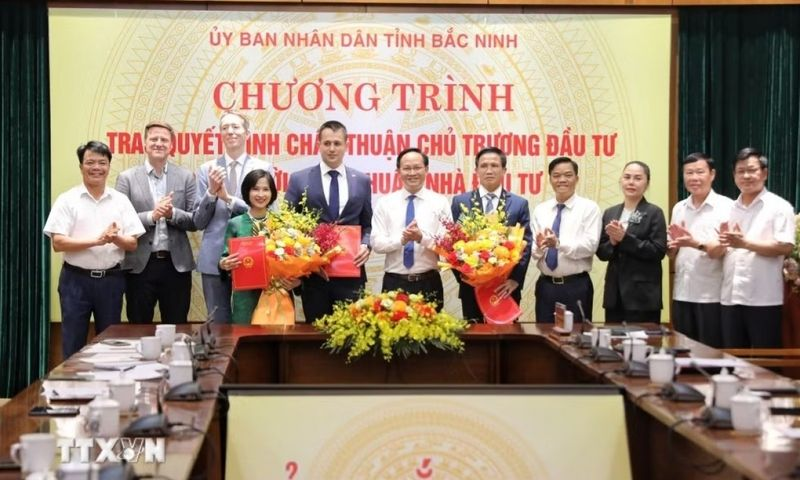
Bắc Ninh chấp thuận chủ trương đầu tư 2 dự án điện gió hơn 6.000 tỷ đồng 🔗 MOI
Chiều 5/6, UBND tỉnh Bắc Ninh trao quyết định chấp thuận chủ trương đầu tư và nhà đầu tư đối với hai dự án điện gió gồm Dự án Nhà máy điện gió SD Sơn Động và Dự án Nhà máy điện gió Bắc Giang 2. Lãnh đ
Ô tô điện mini học sinh cũng lái được, dễ tháo như xe đồ chơi, có bản đi ngang như cua 🔗 MOI
Một startup ô tô tại Pháp vừa giới thiệu iPop - mẫu ô tô điện mini được định vị là phương tiện di chuyển thiết yếu cho nhu cầu hằng ngày - Ảnh: Automobile-propre Một doanh nghiệp chuyên môi giới mua b

Mở hướng phát triển AI và giao thông thông minh tại Việt Nam 🔗 MOI
Các đại biểu tham dự hội thảo ICATE 2026 - Ảnh: X.D. Ngày 5-6, Trường ĐH Xây dựng Miền Trung phối hợp với Trường ĐH Công nghệ giao thông vận tải , Hội Kết cấu và Công nghệ xây dựng Việt Nam tổ chức hộ

Đổi mới mô hình tăng trưởng gắn với tái cơ cấu nền kinh tế trong giai đoạn mới 🔗 MOI
Pháp luật Triển khai Nghị quyết số 07-NQ/TW ngày 18/11/2016 của Bộ Chính trị về chủ trương, giải pháp cơ cấu lại ngân sách nhà nước, quản lý nợ công, việc cơ cấu lại ngân sách nhà nước, quản lý nợ côn

Tiếp nhận phản ánh kiến nghị của doanh nghiệp 🔗 MOI
HỌ VÀ TÊN * EMAIL * SỐ ĐIỆN THOẠI * ĐỊA CHỈ * TIÊU ĐỀ * FILES ĐÍNH KÈM NỘI DUNG * RadEditor - HTML WYSIWYG Editor. MS Word-like content editing experience thanks to a rich set of formatting tools, dro

Khơi thông các động lực tăng trưởng kinh tế Việt Nam 🔗 MOI
Pháp luật Nhờ sự phối hợp đồng bộ của chính sách tài khóa và tiền tệ trong việc thúc đẩy cầu trong nước, kinh tế Việt Nam năm 2025 phục hồi mạnh, với tăng trưởng vượt mục tiêu đề ra. Về ổn định kinh t
Ukraine nỗ lực thúc đẩy đàm phán với Nga trước thời điểm then chốt 🔗 MOI
Ukraine hy vọng các cuộc đàm phán hòa bình với Nga do Mỹ làm trung gian có thể mang lại kết quả trước mùa đông, trong bối cảnh các quan chức ở Kiev ngày càng lo ngại về tình trạng thiếu hụt các hệ thố
Metro Thủ Dầu Một - TP HCM có thể được làm sớm hơn 5 năm 🔗 MOI
Trong công văn gửi Bộ Xây dựng, UBND TP HCM kiến nghị bổ sung tuyến metro số 2 Bình Dương, đoạn Thủ Dầu Một - TP HCM, vào danh mục dự án ưu tiên đầu tư giai đoạn 2026-2030. Đề xuất nhằm đáp ứng mục ti
Đồng Tháp khai mạc lễ hội trái cây, quy tụ hơn 20 hoạt động quảng bá nông sản 🔗 MOI
Tỉnh Đồng Tháp lần đầu tổ chức Lễ hội Trái cây với kỳ vọng quảng bá thương hiệu nông sản, kết nối chuỗi giá trị và mở rộng cơ hội đầu tư, xuất khẩu. Nghi thức khai mạc sự kiện. Ảnh: Báo Đồng Tháp Tối
Chuyển đổi hộ kinh doanh thành doanh nghiệp: Mở rộng thị trường, nâng cao sức cạnh tranh 🔗 MOI
Tiểu thương kinh doanh hàng lưu niệm tại chợ Bến Thành - nơi đang từng bước ứng dụng thanh toán không tiền mặt, hóa đơn điện tử (ẢNH: HOÀNG HÙNG) Tạo động lực cho khu vực kinh tế tư nhân Theo bà Lê Th
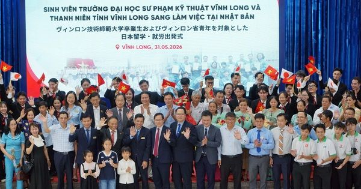
XUẤT KHẨU LAO ĐỘNG: Chuyển từ lượng sang chất 🔗 MOI
Gần 12.000 lao động đi làm việc ở nước ngoài trong tháng 5-2026 cho thấy thị trường xuất khẩu lao động (XKLĐ) tiếp tục phục hồi tích cực. Tuy nhiên, phía sau những con số tăng trưởng là sự thay đổi mạ
Nghịch lý đầy rủi ro của chứng khoán thế giới 🔗 MOI
Ngày 4.6 (theo giờ Mỹ), chỉ số trung bình công nghiệp Dow Jones tăng lên mức cao kỷ lục mới, trong khi chỉ số Nasdaq Composite giảm khi các nhà đầu tư dường như chuyển dịch sang các mã cổ phiếu phi cô
Nỗi lo AI vượt tầm kiểm soát 🔗 MOI
Công ty trí tuệ nhân tạo (AI) Anthropic vừa kêu gọi tạm dừng phát triển các hệ thống AI mạnh nhất, đồng thời cảnh báo con người có nguy cơ mất quyền kiểm soát công nghệ này. Anthropic, công ty phát tr
Zverev đấu Cobolli ở chung kết Roland Garros 🔗 MOI
Chiến thắng trước Mensik giúp Zverev lần thứ hai vào chung kết Roland Garros và lần thứ tư vào chung kết Grand Slam. Trước đó, tay vợt Đức từng thua Dominic Thiem ở chung kết Mỹ Mở rộng 2020 dù dẫn tr
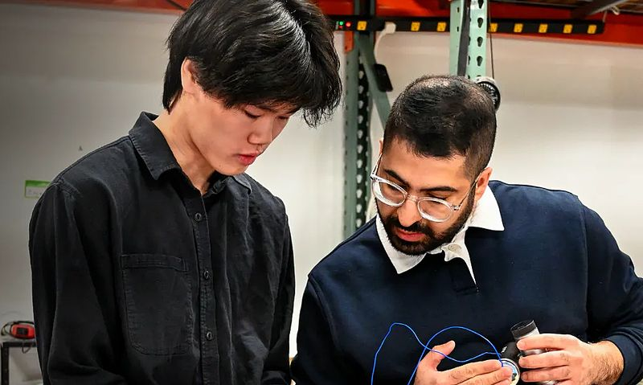
Lý do thương hiệu phương Tây dễ 'hồi sinh' khi về tay Trung Quốc 🔗 MOI
Năm 2018, nhà sản xuất thiết bị nhà bếp Trung Quốc Joyoung thông báo chi 12,49 triệu nhân dân tệ (1,87 triệu USD) để mua 51% cổ phần kiểm soát công ty sản xuất máy hút bụi SharkNinja (Mỹ). Joyoung và
[Infographic] Chứng khoán tuần 1-5/6: VN-Index giảm điểm tuần thứ 3 liên tiếp, về mức 1.838,90 điểm 🔗 MOI
Độ rộng thị trường trong tuần phân hóa, nghiêng về tiêu cực. Hầu hết các nhóm ngành chịu sức ép điều chỉnh như dầu khí, bất động sản, chứng khoán, phân bón, hóa chất, thủy sản, xây dựng, thép... với t
Vì sao sĩ tử Trung Quốc không còn mặn mà với kỳ thi đại học? 🔗 MOI
Phụ huynh Trung Quốc đứng chờ trong kỳ thi tuyển sinh đại học quốc gia tại một trường trung học ở Thượng Hải ngày 7-6-2023 - Ảnh: REUTERS Theo Hãng tin Reuters, số lượng thí sinh đăng ký tham dự kỳ th
Trung Đông tối 5-6: Iran tuyên bố bắn tên lửa cảnh cáo tàu chiến Mỹ ở vịnh Oman, Mỹ bác bỏ 🔗 MOI
Khói bốc lên từ khu vực miền nam Lebanon sau các cuộc không kích của Israel ngày 3-6 - Ảnh: REUTERS Iran tuyên bố bắn tên lửa cảnh cáo tàu chiến Mỹ ở vịnh Oman, Mỹ bác bỏ Iran tuyên bố đã phóng tên lử
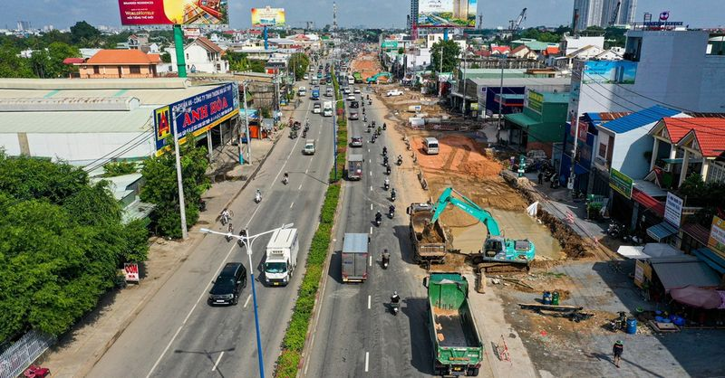
Chinh phục 200km metro đến 2030: TP.HCM sẽ bổ sung tuyến TP Thủ Dầu Một - Tao Đàn vào dự án ưu tiên 🔗 MOI
Theo nghiên cứu, lưu lượng hành khách lớn nhất vào giờ cao điểm của tuyến sau khi metro TP Thủ Dầu Một - TP.HCM kéo dài đến Tao Đàn là khoảng 18.592 hành khách/giờ/hướng. Hiện nay, TP.HCM cũng đang tr

Kiến tạo không gian phát triển mới cho kinh tế tập thể 🔗 MOI
Pháp luật Trong giai đoạn 2021-2025, dựa vào mục tiêu phát triển, điều kiện ngân sách và nhu cầu hỗ trợ, năng lực của các hợp tác xã, Thủ tướng Chính phủ đã ban hành Chương trình hỗ trợ phát triển kin
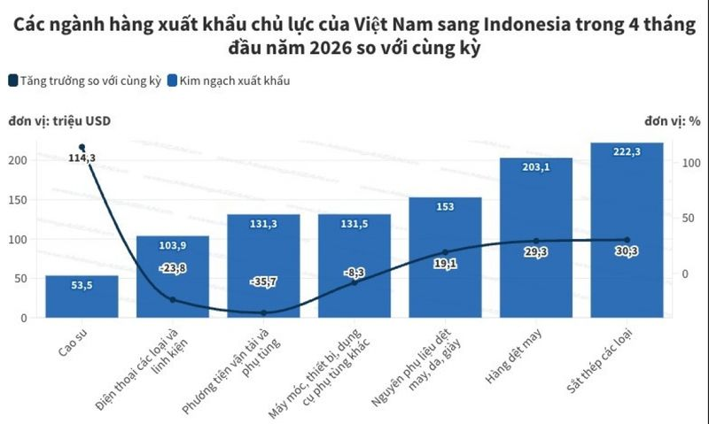
Sắt thép là hàng xuất khẩu chủ lực sang Indonesia 4 tháng đầu năm 🔗 MOI
Lực kéo từ nhóm hàng sắt thép và nguyên liệu công nghiệp đã giúp tổng kim ngạch xuất nhập khẩu Việt Nam - Indonesia đạt hơn 6,07 tỷ USD trong 4 tháng đầu năm 2026, tăng gần 7% so với cùng kỳ năm 2025.

Nhìn lại 1 năm thực thi Nghị quyết 68-NQ/TW 🔗 MOI
Doanh nghiệp Sau 1 năm triển khai Nghị quyết số 68-NQ/TW, nhiều doanh nghiệp công nghệ Việt ghi nhận những chuyển biến tích cực từ môi trường kinh doanh, cơ chế hỗ trợ và tư duy điều hành theo hướng k
Tạp chí Kinh tế Sài Gòn 🔗 MOI
Kinh tế Sài Gòn giữ bản quyền nội dung của trang web thesaigontimes.vn. Không sử dụng lại nội dung trên trang này dưới mọi hình thức, trừ khi được Kinh tế Sài Gòn đồng ý bằng văn bản. Trang ngoài sẽ đ
Tạp chí Kinh tế Sài Gòn 🔗 MOI
Kinh tế Sài Gòn giữ bản quyền nội dung của trang web thesaigontimes.vn. Không sử dụng lại nội dung trên trang này dưới mọi hình thức, trừ khi được Kinh tế Sài Gòn đồng ý bằng văn bản. Trang ngoài sẽ đ

Khu Công nghiệp, Khu Kinh tế 🔗 MOI
Bộ Tài chính đã và đang nỗ lực không ngừng để cải cách thủ tục hành chính, bảo đảm các lĩnh vực thuộc phạm vi quản lý nhà nước của Bộ Tài chính luôn thông suốt theo mô hình chính quyền địa phương 2 cấ
Tạp chí Kinh tế Sài Gòn 🔗 MOI
Kinh tế Sài Gòn giữ bản quyền nội dung của trang web thesaigontimes.vn. Không sử dụng lại nội dung trên trang này dưới mọi hình thức, trừ khi được Kinh tế Sài Gòn đồng ý bằng văn bản. Trang ngoài sẽ đ
Tạp chí Kinh tế Sài Gòn 🔗 MOI
Kinh tế Sài Gòn giữ bản quyền nội dung của trang web thesaigontimes.vn. Không sử dụng lại nội dung trên trang này dưới mọi hình thức, trừ khi được Kinh tế Sài Gòn đồng ý bằng văn bản. Trang ngoài sẽ đ
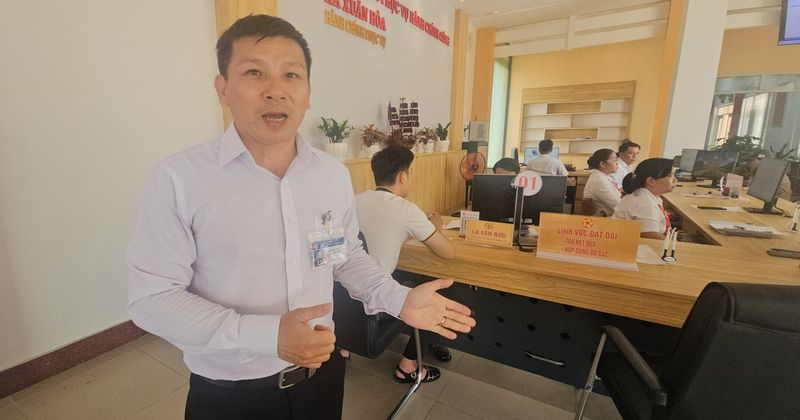
Đồng Nai: Trung tâm phục vụ hành chính công sẽ có wifi, máy photocopy miễn phí 🔗 MOI
UBND thành phố Đồng Nai vừa ban hành kế hoạch triển khai thực hiện việc đánh giá và công nhận xã, phường đạt chuẩn "Chính quyền thân thiện" giai đoạn 2026 - 2030. Trung tâm phục vụ hành chính công xã
Ông Zelensky đề nghị gặp ông Putin để đàm phán 🔗 MOI
Trong thư, ông Zelensky cho rằng với tình hình Mỹ đang tập trung vào cuộc xung đột với Iran, sẽ là sai lầm nếu chỉ chờ đợi chính quyền Tổng thống Donald Trump quay lại ưu tiên việc chấm dứt chiến sự U
Chiến sự Ukraine ngày 1.563: Romania 'vạ lây' khi xuồng cảm tử Ukraine phát nổ 🔗 MOI
Xuồng cảm tử phát nổ gần cảng của Romania Theo Reuters ngày 5.6, một chiếc xuồng không người lái đã tự phát nổ cách một bến dầu khoảng 500 m tại cảng Constanta, Romania. Vụ việc không gây thương vong.
Đưa điện ảnh đến cộng đồng 🔗 MOI
Ngày 5-6, chương trình ra mắt bộ nhận diện "Thành phố điện ảnh" thuộc mạng lưới các thành phố sáng tạo UNESCO; công bố và triển khai sáng kiến "Kiến tạo điện ảnh trong học đường"; phát động Hội thi sá
Khai mạc lễ hội trái cây tỉnh Đồng Tháp lần thứ I năm 2026 🔗 MOI
Phát biểu tại lễ khai mạc, đồng chí Phạm Thành Ngại, Chủ tịch Ủy ban nhân dân tỉnh Đồng Tháp cho biết, lễ hội là sự kiện được tổ chức nhằm tôn vinh các loại trái cây đặc sản của tỉnh Đồng Tháp, khu vự
2 triệu người thành triệu phú đôla nhờ đầu tư chứng khoán 🔗 MOI
TIN MỚI Khi thị trường chứng khoán toàn cầu liên tiếp lập đỉnh trong năm 2025, một hệ quả ít được chú ý đang diễn ra: Thế giới vừa có thêm gần 2 triệu triệu phú mới chỉ sau một năm. Theo Báo cáo Thịnh

Chuyên đề Agribank 🔗 MOI
Trước áp lực thực thi Nghị định số 70/2025/NĐ-CP về hóa đơn điện tử và quản lý thuế, Agribank tổ chức hội nghị tập huấn toàn quốc, thống nhất quy trình hỗ trợ và giới thiệu gói giải pháp số dành riêng
Phó bí thư Nguyễn Phước Lộc: Mạng lưới y tế phải linh hoạt, không để ai bị hạn chế tiếp cận 🔗 MOI
Ủy viên Trung ương Đảng, Phó bí thư Thành ủy TP.HCM Nguyễn Phước Lộc phát biểu tại hội nghị - Ảnh: TRÚC GIANG/SGGP Ngày 5-6, Thành ủy TP.HCM tổ chức Hội nghị quán triệt công tác triển khai khám sức kh
Tổng thống Putin: Tôi không thấy có lý do gì để gặp ông Zelensky 🔗 MOI
Tổng thống Putin tại phiên toàn thể của Diễn đàn Kinh tế quốc tế St. Petersburg (SPIEF) ở thành phố St. Petersburg, Nga, ngày 5-6 - Ảnh: AP Phát biểu ngày 5-6 tại Diễn đàn Kinh tế quốc tế St.

TỔNG QUAN TỔNG QUAN KINH TẾ 🔗 MOI
Kinh tế Hoạt động điều hành chính sách tài khóa năm 2025 diễn ra trong bối cảnh tình hình kinh tế trong nước và quốc tế tiếp tục diễn biến phức tạp, căng thẳng thương mại toàn cầu gia tăng, đặc biệt l
LG Innotek xây nhà máy chất nền bán dẫn mới tại Hải Phòng 🔗 MOI
LG Innotek, công ty thành viên chuyên về vật liệu và linh kiện điện tử của Tập đoàn LG, vừa ký biên bản ghi nhớ với UBND TP Hải Phòng về việc đầu tư xây dựng nhà máy sản xuất chất nền bán dẫn mới tại

Tiếp nhận phản ánh kiến nghị của công dân 🔗 MOI
HỌ VÀ TÊN * EMAIL * SỐ ĐIỆN THOẠI * ĐỊA CHỈ * TIÊU ĐỀ * FILES ĐÍNH KÈM NỘI DUNG * RadEditor - HTML WYSIWYG Editor. MS Word-like content editing experience thanks to a rich set of formatting tools, dro
Từ bỏ phòng thí nghiệm cấp cao ở Mỹ, phó giáo sư nổi tiếng về Việt Nam công tác 🔗 MOI
Từ phòng thí nghiệm quốc tế PGS.TS Nguyễn Duy Liêm là chuyên gia trong lĩnh vực đổi mới sáng tạo, có nền tảng nghiên cứu sâu về vi sinh học phân tử, di truyền học vi khuẩn và kháng kháng sinh. Ông nhậ

Ấn phẩm 🔗 MOI
Tạp chí Kinh tế - Tài chính Online. Cơ quan chủ quản: Bộ Tài chính Giấy phép xuất bản số: 107/GP-BVHTTDL ngày 26/8/2025. Tạp chí Kinh tế - Tài chính Online: e-ISSN 3093-3498.
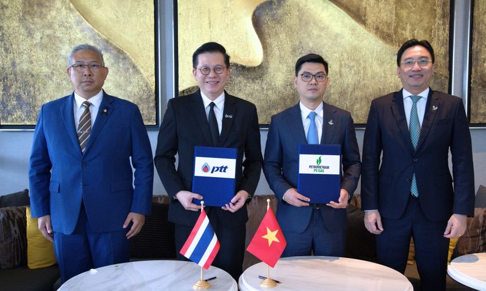
PV GAS ký kết hợp tác về LPG, LNG với đối tác Thái Lan và Philippines 🔗 MOI
Nhằm tối ưu hóa chuỗi cung ứng năng lượng khu vực, PV GAS vừa ký kết thỏa thuận hợp tác thương mại và hạ tầng logistics lĩnh vực LNG, LPG với hai đối tác PTT (Thái Lan) và PETRON (Philippines). Trong

Chính phủ với doanh nghiệp 🔗 MOI
20/03/2026 (Chinhphu.vn) - Chính phủ ban hành Nghị quyết số 11/2026/NQ-CP về chi phí tiền lương Ngân hàng thương mại TNHH một thành viên Xây dựng Việt Nam, Ngân... 04/03/2026 (Chinhphu.vn) - Chính phủ
Cổ phiếu lao dốc thê thảm, chuyển giao lãnh đạo, điều gì đang xảy ra với Novaland? 🔗 MOI
Cổ phiếu lao dốc sau nhịp tăng nóng Phiên giao dịch 5/6 tiếp tục là một ngày kém tích cực đối với cổ phiếu NVL của CTCP Tập đoàn Đầu tư Địa ốc No Va (Novaland). Mã này giảm thêm 2,2% xuống còn 13.550
Trình Thủ tướng việc đầu tư 2 dự án đường sắt quốc gia tại Hà Nội 🔗 MOI
Bộ Xây dựng vừa có văn bản gửi Thủ tướng Chính phủ về việc giao UBND TP. Hà Nội làm cơ quan chủ quản đầu tư một số dự án đường sắt quốc gia khu vực TP. Hà Nội.
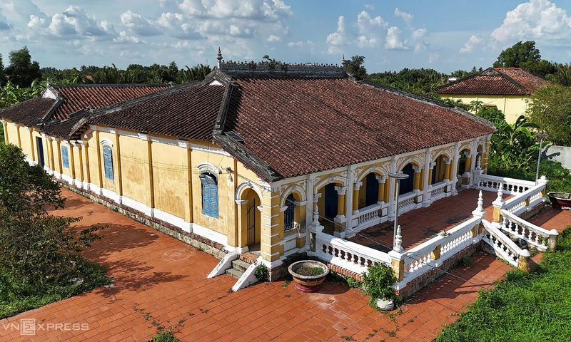
Biệt thự cổ miền Tây loay hoay 'tìm đường sống' 🔗 MOI
Cuối tháng 5, một nhóm du khách Mỹ được xe điện đưa từ quốc lộ vào tham quan nhà cổ Ông Kiệt ở làng cổ Đông Hòa Hiệp, xã Cái Bè. Giữa vườn cây trái xanh mát, căn nhà mái ngói, vách gỗ năm gian hình ch
Một công ty chứng khoán mới lên sàn vừa lọt rổ FTSE Vietnam ETF trong kỳ cơ cấu tháng 6 🔗 MOI
TIN MỚI Trong đợt review quý 2/2026 vào ngày 5/6, FTSE Russell đã thêm mới cổ phiếu Chứng khoán VPS (VCK) vào rổ chỉ số FTSE Vietnam Index, ngược lại loại 3 mã DIG - DIC Corp, DGC - Đức Giang và GAS r
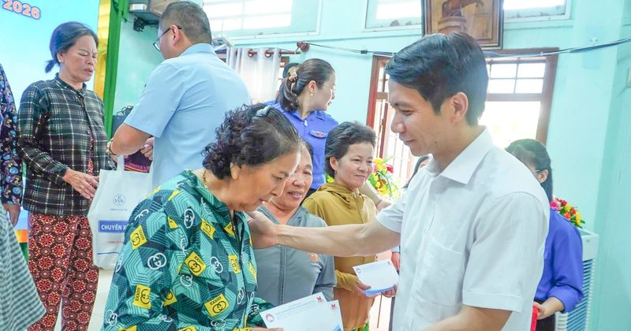
Nhiều phần quà ý nghĩa đến với người dân đảo xa ở Gia Lai 🔗 MOI
Ngày 5/6, tại xã đảo Nhơn Châu, Tỉnh Đoàn , Hội Sinh viên Việt Nam tỉnh Gia Lai phối hợp với Trung tâm Phát triển Văn hóa đọc và Kinh tế xuất bản (Hội Xuất bản Việt Nam), tổ chức chương trình "Sinh vi
Nữ diễn viên quá đẹp nên đóng phim kinh dị không ai sợ 🔗 MOI
Ai là con ma nhà họ Hứa? Ra mắt chiều 5/6, phim điện ảnh Lầu chú Hỏa - Lời nguyền con ma nhà họ Hứa gây chú ý với không khí rùng rợn và cách tiếp cận đậm chất kinh dị. Phim kể về hành trình của một nh
Những sai lầm nhỏ khi đi bộ có thể làm mất tác dụng lớn 🔗 MOI
Tiến sĩ Milica McDowell, chuyên gia cơ xương khớp và nhà vật lý trị liệu tại Mỹ, cho biết nhiều người thường xem nhẹ việc đi bộ và chưa nhận thức đầy đủ lợi ích của hoạt động này. Theo bà, đi bộ đúng
Tỷ phú Eric Schmidt, cựu Chủ tịch, Tổng Giám đốc Tập đoàn Google cùng đoàn chuyên gia AI quốc tế trao đổi về tương lai AI Việt Nam 🔗 MOI
Ngày 5/6, tại Hà Nội, Trung tâm Đổi mới sáng tạo Quốc gia phối hợp Liên minh Trí tuệ nhân tạo toàn cầu (AI Alliance) kết nối, tổ chức đoàn chuyên gia quốc tế về trí tuệ nhân tạo (AI) sang thăm và làm
'Lầu chú Hỏa' toàn gương mặt trẻ, có gì để thu hút khán giả? 🔗 MOI
Lầu chú Hỏa là phim kinh dị Việt Nam khai thác toàn diện phong cách found footage - Ảnh: ĐPCC Chiều 5-6, tại TP.HCM diễn ra buổi công chiếu phim Lầu chú Hỏa . Phim do Hùng Trần làm đạo diễn, quy tụ dà
Hai lời kêu gọi lịch sử của Chủ tịch Hồ Chí Minh và bài học tự chủ, tự cường cho Việt Nam hôm nay 🔗 MOI
Đoàn chủ tịch điều hành hội thảo khoa học - Ảnh: QUỐC THANH Sáng 5-6, Bộ Quốc phòng phối hợp Thành ủy TP.HCM tổ chức hội thảo khoa học với chủ đề Lời kêu gọi toàn quốc kháng chiến - Lời kêu gọi đồng b
Bàng hoàng phát hiện 'con người khác' của học trò lớp 6 trên mạng xã hội 🔗 MOI
Điện thoại trong tay trẻ: công cụ hay cạm bẫy? - Ảnh minh họa: AI Tôi nhớ câu chuyện ngày đầu tiên nhận chủ nhiệm lớp 6, hạnh phúc bắt gặp cỡ 40 gương mặt tươi tắn, rạng rỡ mà tôi nghĩ trong đâ

Kiểm soát lạm phát trước những "biến số" cuối năm 🔗 MOI
Tài chính Tại Nghị quyết số 86/NQ-CP ngày 4/11/2025 về triển khai nhiệm vụ trọng tâm những tháng cuối năm 2025, Chính phủ tiếp tục yêu cầu về kiểm soát lạm phát, giữ vững ổn định kinh tế vĩ mô. Trong

Trẻ sinh ra di truyền giang mai từ mẹ có điều trị được không? 🔗 MOI
Nguyên Chủ tịch Google: Việt Nam có nhiều điều kiện thuận lợi để phát triển AI 🔗 MOI
Tổng Bí thư, Chủ tịch nước Tô Lâm tiếp ông Eric Schmidt, nguyên Chủ tịch Tập đoàn Google. Dịp này, ông Eric dẫn đầu đoàn chuyên gia trí tuệ nhân tạo thăm và làm việc tại Việt Nam - Ảnh: TTXVN Theo thô
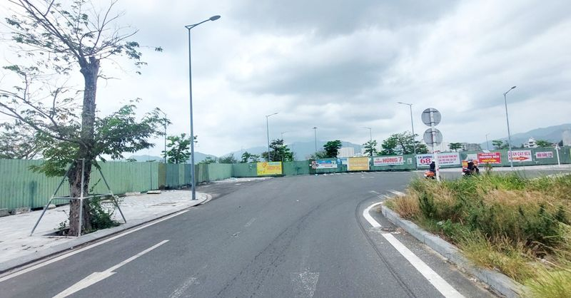
Khánh Hòa mời gọi đầu tư thí điểm dự án nhà ở thương mại có đất thỏa thuận 🔗 MOI
Khu vực sân bay Nha Trang có 5,17ha đất quốc phòng đang được điều chỉnh cục bộ quy hoạch chuyển thành đất ở cho doanh nghiệp thực hiện thí điểm dự án nhà ở thương mại tại Khánh Hòa - Ảnh: PHAN SÔNG NG
Cao thủ hạng 3 cờ tướng Trung Quốc bất lực trước kỳ thủ ngồi xe lăn 🔗 MOI
Mạnh Phồn Duệ hiện xếp hạng 3 làng cờ tướng Trung Quốc - Ảnh: GDCHESS Năm nay 18 tuổi, Mạnh Phồn Duệ được mệnh danh đệ nhất thần đồng làng cờ tướng đại lục, và hiện xếp thứ 3 trên bảng xếp hạng do Hiệ
Diễn đàn Tương lai ASEAN: Nơi ASEAN bàn cách giữ vững vị thế giữa biến động 🔗 MOI
Trailer Diễn đàn Tương lai ASEAN 2026 - Video: Bộ Ngoại giao Từ ngày 9 đến 10-6, thủ đô Hà Nội sẽ đón hơn 500 đại biểu đến tham dự Diễn đàn Tương lai ASEAN (AFF) lần thứ ba với chủ đề "Cùng định hình
Rò rỉ không khí nghiêm trọng, Trạm Vũ trụ quốc tế chuẩn bị kịch bản sơ tán khẩn cấp 🔗 MOI
Các thành viên sứ mệnh Crew-12 của NASA trước thềm chuyến bay lên ISS ngày 13-2-2026 - Ảnh: REUTERS Theo Hãng tin Reuters ngày 5-6, Cơ quan Hàng không Vũ trụ Mỹ (NASA) cho biết 5 phi hành gia trên Trạ
Drone Ukraine phát nổ tại cảng Romania, lo ngại chiến sự lan sang các nước NATO 🔗 MOI
Khói bốc lên tại hiện trường vụ nổ ở cảng Constanta - Ảnh: REUTERS Theo Bộ Quốc phòng Romania, vật thể này tự phát nổ vào khoảng 10h30 sáng ngày 5-6 (giờ địa phương) tại cảng Constanta nhưng không gây

Huy động tài chính xanh hướng tới mục tiêu phát triển bền vững 🔗 MOI
Pháp luật Chuyển đổi năng lượng xanh đã trở thành xu thế toàn cầu mang tính bắt buộc, gắn liền với mục tiêu Net Zero và yêu cầu cạnh tranh trong chuỗi cung ứng quốc tế. Trong bối cảnh đó, doanh nghiệp
LHQ: Toàn cầu tiến gần cuộc khủng hoảng đói nghèo vì chiến sự Trung Đông 🔗 MOI
Việc eo biển Hormuz đóng cửa đang dẫn đến tình trạng đói nghèo gia tăng - Ảnh: AFP Theo Hãng tin AFP, ông Jean-Martin Bauer - Giám đốc bộ phận phân tích lương thực và dinh dưỡng của Chương trình Lương
Thủ tướng Thái Lan thăm chính thức Việt Nam, dự Diễn đàn Tương lai ASEAN 🔗 MOI
Thủ tướng Thái Lan Anutin Charnvirakul - Ảnh: REUTERS Ngày 5-6, Bộ Ngoại giao phát thông cáo cho biết nhận lời mời của Thủ tướng Lê Minh Hưng , Thủ tướng Thái Lan Anutin Charnvirakul sẽ thăm chính thứ
Thợ điện máy Quảng Ngãi tá hỏa phát hiện 4 con rắn lúc nhúc trong máy điều hòa 🔗 MOI
Một con rắn được kéo ra khỏi máy điều hòa - Ảnh: NGÔ QUYỀN Ngày 5-6, anh Ngô Quyền (32 tuổi, ngụ phường Đức Phổ, tỉnh Quảng Ngãi) xác nhận mình là thợ điện máy phát hiện 4 con rắn lúc nhúc bên trong d

Điều hành giá cả thị trường, kiểm soát lạm phát năm 2026 🔗 MOI
Pháp luật Chính sách tiền tệ và chính sách tài khóa là hai công cụ quản lý kinh tế vĩ mô quan trọng của các quốc gia. Mỗi một chính sách đều có mục tiêu riêng nhưng chung quy lại đều cùng theo đuổi mụ

Tạp chí Kinh tế Tài chính kỳ 3 tháng 4/2026 🔗 MOI
Tạp chí Kinh tế Tài chính kỳ 1 tháng 5/2026 🔗 MOI

Tạp chí Kinh tế Tài chính kỳ 2 tháng 5/2026 🔗 MOI

Kỷ niệm 51 năm Ngày Giải phóng miền Nam, thống nhất đất nước: Tự chủ chiến lược, kiến tạo thịnh vượng 🔗 MOI
Kinh tế Trong bối cảnh cạnh tranh thu hút đầu tư công nghệ ngày càng quyết liệt, Việt Nam đang chủ động mở cánh cửa ra thế giới để đón các “đại bàng công nghệ”, coi đây là động lực quan trọng để chuyể
Thủ tướng Thái Lan sắp thăm Việt Nam, dự Diễn đàn Tương lai ASEAN 🔗 MOI
Nhận lời mời của Thủ tướng Lê Minh Hưng, Thủ tướng Thái Lan Anutin Charnvirakul sẽ thăm chính thức Việt Nam và tham dự Diễn đàn Tương lai ASEAN lần thứ ba từ ngày 8-9/6, theo thông cáo của Bộ Ngoại gi
Khơi dậy tinh thần "Tuổi cao - Gương sáng" trong giai đoạn phát triển mới 🔗 MOI
Tổng Bí thư, Chủ tịch nước cho biết đất nước cần tiếng nói tâm huyết của người cao tuổi, cần kinh nghiệm của người đi trước, cần tinh thần “tuổi cao chí khí càng cao” trong giai đoạn phát triển mới. T

Nước CHXHCN Việt Nam 🔗 MOI
© Cổng Thông tin điện tử Chính phủ Tổng Giám đốc: Nguyễn Hồng Sâm Trụ sở: 16 Lê Hồng Phong - Ba Đình - Hà Nội. Điện thoại: Văn phòng: 080 43162; Fax: 080.48924 Email: thongtinchinhphu@chinhphu.vn Bản
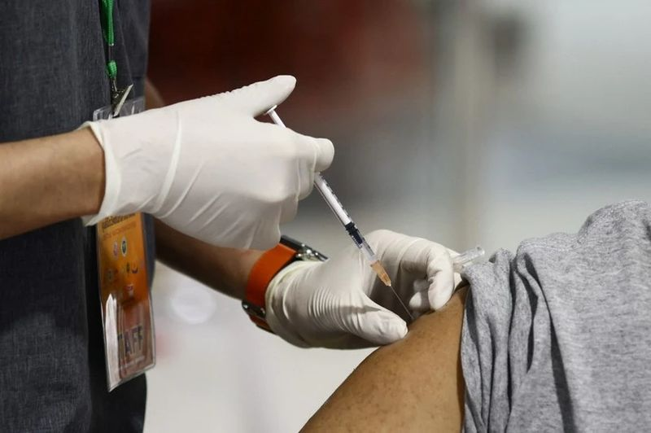
Thử nghiệm trên người vaccine “phổ quát” đầu tiên do AI thiết kế 🔗 MOI
Facebook Twitter Lưu bài viết Bản in Copy link Các nhà khoa học Anh vừa hoàn thành thử nghiệm trên người một loại vaccine có thành phần kháng nguyên hoàn toàn do trí tuệ nhân tạo (AI) thiết kế, đánh d
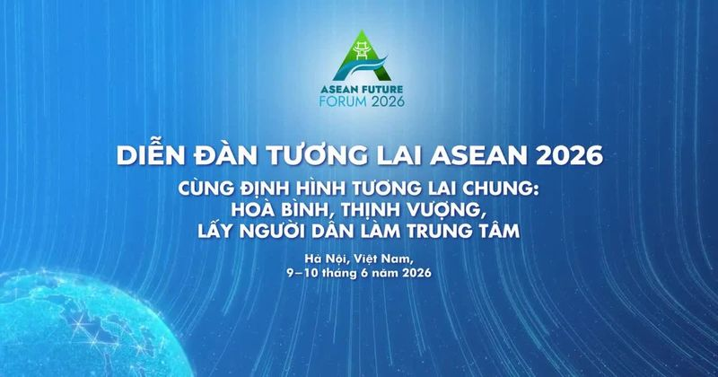
Diễn đàn Tương lai ASEAN 2026: Cùng định hình tương lai chung 🔗 MOI
Diễn đàn Tương lai ASEAN 2026 (ASEAN Future Forum - AFF) sẽ diễn ra trong hai ngày 9 và 10/6 tại Hà Nội, với chủ đề “Cùng định hình tương lai chung: Hòa bình, Thịnh vượng và Phát triển lấy người dân l
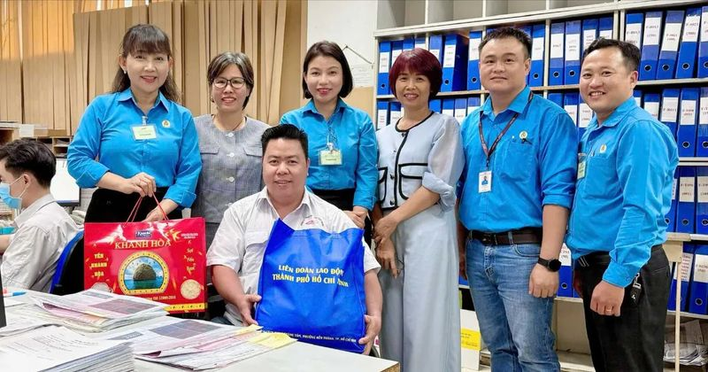
Từ lời Bác dạy, tôi học cách không gục ngã 🔗 MOI
Anh Nguyễn Thanh Điền (ngồi) cùng đồng nghiệp tại đơn vị Một vụ tai nạn lao động nghiêm trọng khi đang làm việc đã khiến anh Nguyễn Thanh Điền mang thương tật vĩnh viễn 85%. Từ trụ cột của gia đình, a
Video UAV Ukraine tập kích các đoàn tàu hậu cần của Nga ở Crưm 🔗 MOI
Video: Trung đoàn số 413 Ukraine Chuyên trang quân sự Defence đưa tin, quân đội Ukraine vừa thực hiện đòn tấn công nhằm vào hệ thống đường sắt ở bán đảo Crưm được cho “hỗ trợ tuyến hậu cần cho các chi
Giám sát chặt các sàn thương mại điện tử 🔗 MOI
Cuối tháng 5 vừa qua, Ủy ban Cạnh tranh quốc gia (Bộ Công Thương) đã làm việc với một số nhà bán hàng trên Shopee và TikTok Shop nhằm ghi nhận những khó khăn, bất cập liên quan đến việc điều chỉnh các
Kết quả bóng đá hôm nay 6/6: Thái Lan rơi chiến thắng, Indonesia gây bất ngờ lớn 🔗 MOI
Kết quả bóng đá hôm nay NGÀY GIỜ TRẬN ĐẤU TRỰC TIẾP GIẢI VÔ ĐỊCH U19 ĐÔNG NAM Á 2026 05/06 16:00 U19 Brunei 0-4 U19 Malaysia TV360 05/06 20:00 U19 Singapore 0-4 U19 Thái Lan TV360 GIAO HỮU CÁC ĐTQG 20
Giá xe máy điện tiếp tục hạ giá sốc, có mẫu giảm sâu đến 22 triệu đồng 🔗 MOI
Thị trường xe máy điện Việt Nam bước sang tháng 6 với những diễn biến đáng chú ý khi hàng loạt thương hiệu lớn đồng loạt tung ưu đãi sâu để kích cầu. Gây chú ý thời điểm hiện tại là biến động giá mẫu
Điểm nóng xung đột ngày 6-6: Anh - Pháp sẵn sàng hành động ở Hormuz 🔗 MOI
Anh và Pháp đã hoàn tất kế hoạch dẫn đầu một chiến dịch quốc tế nhằm rà phá thủy lôi tại eo biển Hormuz, trong bối cảnh các cuộc đàm phán giữa Mỹ và Iran về việc khôi phục hoạt động hàng hải vẫn đang

Huy động nguồn lực cho tăng trưởng xanh 🔗 MOI
Pháp luật Bài viết phân tích tiềm năng, thực trạng và định hướng phát triển các mô hình du lịch biển tại Việt Nam nhằm hướng tới một nền kinh tế biển xanh, bền vững. Với đường bờ biển dài hơn 3.260 km
Người phụ nữ bị cáo buộc lừa 8,7 tỉ, dòng tiền chảy ‘về tay’ người cho vay nặng lãi 🔗 MOI
Các bị cáo tại phiên tòa - Ảnh: ĐOÀN CƯỜNG Dựng kịch bản kinh doanh bất động sản, đáo hạn ngân hàng Ngày 5-6, Tòa án nhân dân TP Đà Nẵng xét xử bị cáo Lê Thị Thư (50 tuổi, quê Hà Tĩnh) về tội lừa đảo

Tập đoàn VNG lên kế hoạch có lãi trở lại sau 4 năm, không chia cổ tức 🔗 MOI
Tập đoàn VNG đặt mục tiêu năm nay lãi trước thuế từ 300 - 450 tỷ đồng, chấm dứt giai đoạn lỗ kéo dài 4 năm liên tiếp. CTCP Tập đoàn VNG (UpCOM: VNZ) vừa công bố tài liệu họp đại hội đồng cổ đông (ĐHĐC

Chỉ đạo, quyết định của Chính phủ - Thủ tướng Chính phủ 🔗 MOI
05/06/2026 (Chinhphu.vn) - Phó Thủ tướng Chính phủ Lê Tiến Châu ký Quyết định số 979/QĐ-TTg ban hành Kế hoạch triển khai thi hành Nghị quyết số 20/2026/QH16 về... 05/06/2026 (Chinhphu.vn) - Phó Thủ tư

Xoắn dây tinh và thời gian vàng cấp cứu 🔗 MOI

Bộ Tài chính đồng hành cùng doanh nghiệp nhỏ và vừa trên hành trình chuyển đổi kép 🔗 MOI
Chuyển đổi số Trong bối cảnh tiêu chuẩn ESG, yêu cầu Net Zero và sức ép cạnh tranh toàn cầu ngày càng gia tăng, phần lớn doanh nghiệp Việt Nam, đặc biệt là doanh nghiệp nhỏ và vừa đang đối mặt với kho
Thị trường chứng khoán 🔗 MOI
Nhật Bản bắt đầu đàm phán xuất khẩu tàu khu trục sang Indonesia 🔗 MOI
Bộ trưởng Quốc phòng Indonesia Sjafrie Sjamsoeddin (bên phải) đi cùng Bộ trưởng Quốc phòng Nhật Bản Shinjiro Koizumi tại Jakarta - Ảnh: AFP Theo Hãng tin Kyodo News, ngày 5-6, Nhật Bản và Indonesia đã
Phạt tài xế xe khách cầm micro hát karaoke 🔗 MOI
Nam tài xế vừa chạy xe vừa cầm micro hát karaoke - Ảnh: Bạn đọc cung cấp Sáng 5-6, thông tin từ Trạm cảnh sát giao thông Diễn Châu, Phòng Cảnh sát giao thông Công an tỉnh Nghệ An cho biết đã làm việc

Báo cáo tài chính doanh nghiệp 🔗 MOI
Tổng tài sản của VNPT đến cuối năm 2025 đạt 119.610,3 tỷ đồng, tăng gần 6%. Trong đó, hàng tồn kho tăng hơn 3 lần lên 4.711,4 tỷ đồng, chủ yếu do nguyên liệu, vật liệu và chi phí sản xuất kinh doanh d
Ba nước châu Phi khởi động đường ống khí đốt xuyên Sahara 🔗 MOI
Facebook Twitter Lưu bài viết Bản in Copy link Algeria, Nigeria và Niger đang đẩy nhanh triển khai Dự án Đường ống khí đốt xuyên Sahara (TSGP) dài khoảng 4.128km, với mục tiêu vận chuyển tới 30 tỷ m3
Alexander Zverev lần thứ 4 vào chung kết Grand Slam 🔗 MOI
Highlights Alexander Zverev 3-1 Jakub Mensik Alexander Zverev tiếp tục thể hiện bản lĩnh của ứng viên vô địch khi vượt qua Jakub Mensik ở bán kết đơn nam. Tay vợt người Đức giành chiến thắng 3-1 với c
Cảnh báo lạm dụng thuốc bổ não mùa thi 🔗 MOI
Nhập viện vì bổ sung quá mức Những ngày gần đây, trên các diễn đàn phụ huynh, không khó để bắt gặp những bài đăng chia sẻ kinh nghiệm chọn mua thuốc bổ não, viên uống DHA, Omega-3, các sản phẩm tăng t
Giá vàng mất bao lâu để rơi từ 192,2 triệu về sát 150 triệu đồng/lượng? 🔗 MOI
Hướng tới World Cup 2026 (*): Hấp dẫn cuộc chiến "Giày vàng" 🔗 MOI
Song hành với hành trình chinh phục ngôi vương là cuộc đua giành Chiếc giày vàng, nơi những chân sút xuất sắc nhất thế giới cạnh tranh để khẳng định vị thế của mình bằng những bàn thắng. Từ Paolo Ross
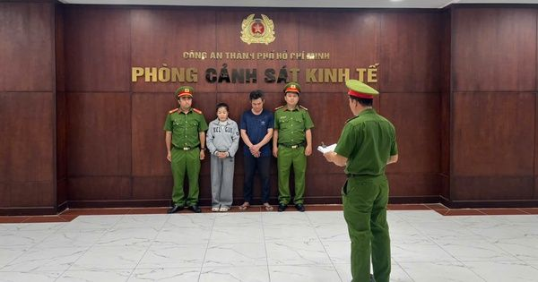
Không để hàng giả có đất sống 🔗 MOI
TP HCM vừa ban hành kế hoạch tăng cường kiểm tra, phát hiện sớm, xử lý hành vi vi phạm quyền sở hữu trí tuệ, tập trung vào các nhóm hàng có nguy cơ cao bị làm hàng giả (TikTok, Facebook, livestream bá
'Tàu ngầm không tháp chỉ huy' của Trung Quốc lộ diện 🔗 MOI
Tàu ngầm không tháp chỉ huy của Trung Quốc lần đầu xuất hiện trong ảnh vệ tinh hôm 1/6, khi neo đậu ở cầu cảng tại nhà máy đóng tàu Giang Nam thuộc thành phố Thượng Hải. Chuyên trang hải quân Naval Ne
Hành trình kiến tạo mặt cỏ cho World Cup 🔗 MOI
Tiếng còi khai cuộc của World Cup sẽ vang lên vào ngày 11/6 tại sân vận động Estadio Azteca ở Mexico City, mở màn cho lễ hội thể thao kéo dài suốt mùa hè và trải dài trên 3 quốc gia Mexico, Mỹ và Cana
Đà Nẵng ra quân Tháng hành động vì môi trường, lan tỏa lối sống xanh 🔗 MOI
Sáng 5/6, UBND TP. Đà Nẵng tổ chức Lễ phát động và ra quân Tháng hành động vì môi trường , Tuần lễ Biển và Hải đảo Việt Nam trên địa bàn TP. Đà Nẵng năm 2026.
Tàu thuyền tìm cách vượt Hormuz giữa rủi ro an ninh 🔗 MOI
Theo nền tảng cung cấp dữ liệu hàng hải Lloyd's List Intelligence ngày 4-6, gần 40 tàu không có liên hệ với Iran đã đi qua eo biển Hormuz thành công trong giai đoạn trên. Tính từ tháng 3, con số này l
Hoa hậu Lê Nguyễn Bảo Ngọc nói về 'công việc xanh' cho người trẻ 🔗 MOI
Hoa hậu Lê Nguyễn Bảo Ngọc gợi mở định hướng nghề nghiệp "xanh" cho thiếu nhi - Ảnh: QUANG TRƯỜNG Chương trình " Thiếu nhi Việt Nam ứng phó với biến đổi khí hậu " do Hội đồng Đội Trung ương phối hợp c

Hiểu đúng thí điểm vùng phát thải thấp từ 1-7: Không cấm hết xe máy xăng như lời đồn 🔗 MOI
Chi tiết khu vực dự kiến thí điểm vùng phát thải thấp tại Hà Nội từ ngày 1-7-2026 - Ảnh: VTV Từ ngày 1-7, Hà Nội bắt đầu triển khai thí điểm vùng phát thải thấp (Low Emission Zone - LEZ) tại 9 phường

quản lý ngân sách hiệu quả, phục vụ chính quyền địa phương 2 cấp 🔗 MOI
Tài chính Không chỉ tinh gọn, sắp xếp bộ máy và kịp thời tham mưu, ban hành, triển khai các văn bản hướng dẫn về kế toán phục vụ mô hình chính quyền địa phương 2 cấp, tham gia các đoàn công tác cùng B
🔗 MOI
'Tàn Chỉ' - một công trình nghệ thuật mất 6 tháng các chuyên gia lội bùn nghiên cứu - bỗng chốc biến thành 'phông nền miễn phí' trong MV 'Come my way' của Sơn Tùng M-TP nhờ chiêu... 'quên' xin phép. T
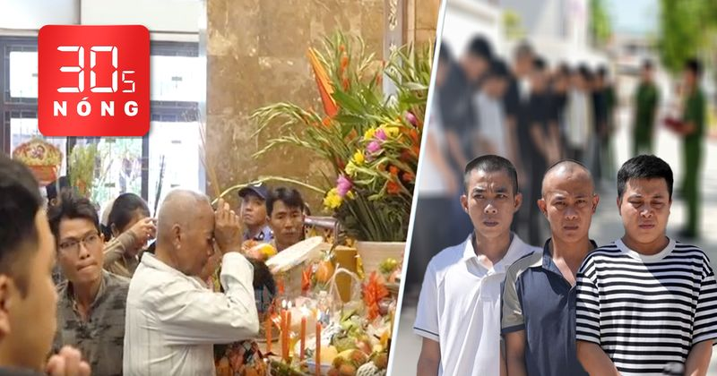
Bản tin 30s nóng: Đông nghịt người viếng Bà Chúa Xứ núi Sam; Bắt nhóm giả 'gái xinh', lừa 36 tỉ 🔗 MOI
Bản tin 30s nóng: Đông nghịt người viếng Bà Chúa Xứ núi Sam; Bắt nhóm giả 'gái xinh', lừa 36 tỉ Bản tin 30s nóng 5-6: Đông nghịt người viếng Bà Chúa Xứ núi Sam; Bắt nhóm giả 'ga
Tin tức giá xe: Isuzu mu-X giảm tới 115 triệu tại đại lý, SUV D nhảy xuống 'đọ giá' Mazda CX-5 🔗 MOI
Isuzu mu-X đang được đại lý giảm 115 triệu đồng. - Ảnh: Đại lý Trong bối cảnh nhiều mẫu SUV 7 chỗ liên tục được điều chỉnh giá bán, Isuzu mu-X trở thành một trong những cái tên đáng chú ý khi giá bán
Nghệ sĩ Thanh Tòng xuất hiện đầy xúc động trong tập đầu Nghệ thuật và chạm 🔗 MOI
Hình ảnh cố nghệ sĩ Thanh Tòng với nhân vật Phàn Định Công trong tuồng San Hậu khiến khán giả rưng rưng - Ảnh chụp màn hình: LINH ĐOAN Cố nghệ sĩ Thanh Tòng ca diễn trong thước phim tư liệu tuồng San

Hàng ngàn người dân check-in với các xuồng ghe đầy trái cây Đồng Tháp 🔗 MOI
Dòng người đổ về quảng trường Hùng Vương trong đêm khai mạc lễ hội - Ảnh: ĐẶNG TUYẾT Theo ghi nhận của Tuổi Trẻ Online , đêm khai mạc Lễ hội trái cây có hàng ngàn người dân và du khách từ khắp nơi đổ
Bóng đá Thái Lan đón niềm vui lẫn nỗi tiếc nuối trong cùng một đêm 🔗 MOI
U19 Thái Lan tiếp tục ghi dấu ấn - Ảnh: FAT Sau liên tiếp các thất bại ở những giải đấu trẻ thời gian qua, bóng đá Thái Lan đã tìm lại được niềm vui khi tham gia Giải U19 Đông Nam Á. Tối ngày 5-6, U19
Tên lửa siêu vượt âm Oreshnik bất ngờ 'xuất hiện' trong công viên giải trí Nga 🔗 MOI
Trò chơi hình tên lửa tên Oreshnik tại một công viên giải trí ở thành phố St. Petersburg, Nga - Ảnh: REUTERS Theo Hãng tin Reuters, một công viên giải trí ở thành phố St. Petersburg (Nga) đang gây chú
Sóng cuốn rạp hàng trăm hecta rừng ven biển Đông Cà Mau 🔗 MOI
Nhiều cây rừng phòng hộ hàng chục năm tuổi ven biển Đông bị sóng đánh bật gốc - Ảnh: THANH HUYỀN Ngày 5-6, thông tin từ Sở Nông nghiệp và Môi trường tỉnh Cà Mau, tình trạng sạt lở bờ biển Đông sẽ còn
TP.HCM vào tháng cao điểm truy quét tội phạm ma túy 🔗 MOI
TP.HCM làm sạch các điểm phức tạp về ma túy trong tháng 6 - Ảnh: Công an TP.HCM Theo kế hoạch UBND TP.HCM vừa ban hành, Tháng hành động phòng, chống ma túy được triển khai từ ngày 1 đến 30-6, huy động

Góc chuyên gia & nhà quản lý 🔗 MOI
Bộ Tài chính đã và đang nỗ lực không ngừng để cải cách thủ tục hành chính, bảo đảm các lĩnh vực thuộc phạm vi quản lý nhà nước của Bộ Tài chính luôn thông suốt theo mô hình chính quyền địa phương 2 cấ

Đổi mới công tác xây dựng và thi hành pháp luật: Dấu ấn 1 năm thực hiện Nghị quyết số 66-NQ/TW 🔗 MOI
Tài chính Trong tiến trình phát triển đất nước, cải cách thể chế luôn được xác định là khâu đột phá để khơi thông nguồn lực và nâng cao năng lực cạnh tranh quốc gia. Trên nền tảng những chuyển động mạ

nhà đất công đôi dư 🔗 MOI
Tài chính Đằng sau hàng chục nghìn cơ sở nhà, đất công chưa được xử lý dứt điểm không chỉ là câu chuyện thủ tục hay hồ sơ pháp lý, mà còn là tâm lý e ngại trách nhiệm trong quá trình thực thi. Mệnh lệ

Hoạt động của Lãnh đạo Bộ Tài chính 🔗 MOI
Bộ Tài chính đã và đang nỗ lực không ngừng để cải cách thủ tục hành chính, bảo đảm các lĩnh vực thuộc phạm vi quản lý nhà nước của Bộ Tài chính luôn thông suốt theo mô hình chính quyền địa phương 2 cấ
Cầu ngưng thi công, dân đi lại khó khăn 🔗 MOI
“Thời gian qua, chính quyền địa phương đã nhiều lần vận động nhưng một số hộ dân chưa đồng ý bàn giao mặt bằng, dẫn đến nhà thầu không thể triển khai thi công. Vì vậy, xã đã gửi hồ sơ xin ý kiến Sở Tư
Chuyện lạ ở World Cup 2026: 2 cặp anh em cùng 'chia đôi nẻo đường' 🔗 MOI
Con đường thăng tiến chóng mặt của anh em nhà Doue Nhiều năm trước, cậu bé 5 tuổi Desire Doue lọt vào mắt xanh của các tuyển trạch viên CLB Rennes khi đang mải mê tâng một quả bóng sờn cũ bên ngoài đư
Giá căn hộ TPHCM lập đỉnh gần 200 triệu đồng/m2, người mua 'chờ đợi và quan sát' 🔗 MOI
Giá bán căn hộ khu lõi TPHCM lập đỉnh mới Theo báo cáo mới nhất của Cushman & Wakefield, quý I/2026, khu vực lõi TPHCM ghi nhận 1.200 căn hộ mở bán mới, giảm 62% so với quý trước và giảm 47% so với cù
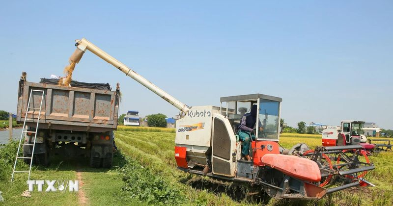
Ninh Bình thắng lợi vụ lúa Xuân nhờ ứng dụng khoa học kỹ thuật 🔗 MOI
Facebook Twitter Lưu bài viết Bản in Copy link Những ngày đầu tháng 6, trên khắp các cánh đồng của tỉnh Ninh Bình, nông dân đang khẩn trương bước vào vụ thu hoạch lúa Xuân. Những bông lúa trĩu hạt, ch
Ông Putin đăng đàn trả lời bức thư ‘khiếm nhã’ của ông Zelensky 🔗 MOI
(PLO)- Tổng thống Nga Vladimir Putin phản hồi bức thư của Tổng thống Ukraine Volodymyr Zelensky, cho rằng bức thư “chứa đựng một số nhận xét khiếm nhã”. Ngày 5-6, Tổng thống Nga Vladimir Putin phản hồ
U19 Thái Lan thắng đậm Singapore, đòi lại ngôi đầu bảng 🔗 MOI
Highlights U19 Thái Lan 4-0 U19 Singapore: Xem Giải vô địch U19 Đông Nam Á từ 01/06 – 14/06 trên TV360 tại https://tv360.vn U19 Thái Lan tiếp tục thể hiện sức mạnh tại bảng B giải U19 Đông Nam Á 2026
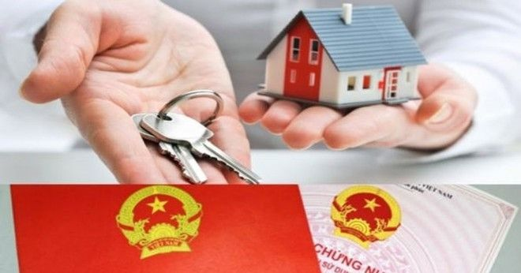
Trở về quê hương lúc tuổi xế chiều, Việt kiều có được đứng tên đất? 🔗 MOI
Theo ông B., ông từng có hộ khẩu thường trú tại tỉnh Tiền Giang (cũ). Hiện tại, tuy ông không còn quốc tịch Việt Nam nhưng vẫn có giấy miễn thị thực 5 năm. Dự định trở về Việt Nam sinh sống lâu dài, ô
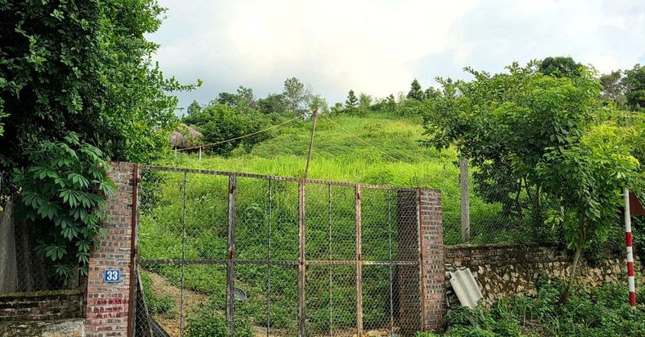
Người phụ nữ bất ngờ khi hơn 2.600m2 đất có nhà ở bị ghi là đất vườn 🔗 MOI
Bà B.T.H. (Quảng Ngãi) cho biết gia đình bà đang sử dụng thửa đất rộng khoảng 2.600m2 có nguồn gốc do ông cố để lại. Theo trình bày, ban đầu ông cố của bà sở hữu tổng cộng 3.900m2 đất.
Lịch âm hôm nay là ngày Kim Dương, dương lịch 6.6 xuất hiện ngày đặc biệt 🔗 MOI
Dương lịch hôm nay là thứ bảy, đánh dấu năm 2026 trải qua ngày thứ 155. Theo lịch âm hôm nay 6.6 là ngày 21 tháng 4, theo cách gọi can chi là ngày Tân Hợi, tháng Quý Tỵ, năm Bính Ngọ. Lịch âm hôm nay
Làm đẹp cần an toàn và có trách nhiệm 🔗 MOI
Theo TS-BS Trần Nguyên Ánh Tú, Trưởng Khoa Thẩm mỹ da - Bệnh viện Da liễu TP HCM, y học tái tạo đang trở thành một hướng tiếp cận quan trọng trong da liễu thẩm mỹ hiện đại. Nếu thẩm mỹ trước đây chủ y
Từ lời hiệu triệu lịch sử đến khát vọng vươn mình 🔗 MOI
Ngày 5-6, tại TP HCM, Bộ Quốc phòng phối hợp với Thành ủy TP HCM tổ chức hội thảo khoa học với chủ đề "Lời kêu gọi toàn quốc kháng chiến - Lời kêu gọi đồng bào và chiến sĩ cả nước - Ý chí bảo vệ độc l
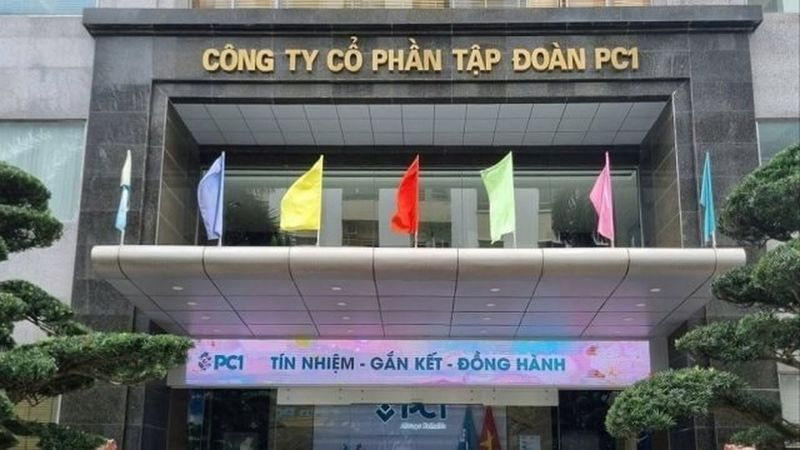
Chủ tịch bị khởi tố, HĐQT còn duy nhất 1 thành viên: PC1 bất ngờ có thêm cổ đông lớn 🔗 MOI
PC1&CII: Giá hiện tại Thay đổi Xem hồ sơ doanh nghiệp TIN MỚI CTCP Đầu Tư Hạ Tầng Kỹ Thuật Thành Phố Hồ Chí Minh (mã CK: CII) vừa thông báo ngày 5/6/2026, nhóm CII đã thực hiện báo cáo giao dịch về vi
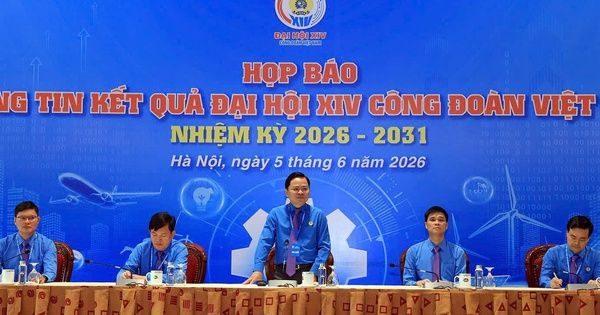
Xây 10.700 nhà ở cho công nhân 🔗 MOI
Trưa 5-6, tại buổi họp báo thông tin kết quả Đại hội XIV Công đoàn Việt Nam, trả lời câu hỏi của các cơ quan báo chí về việc triển khai các dự án nhà ở xã hội (NƠXH) cho thuê dành cho công nhân (CN),
Nữ tài xế Mỹ lái ô tô lên đường ray, vào thẳng ga tàu điện trên cao vì tin GPS 🔗 MOI
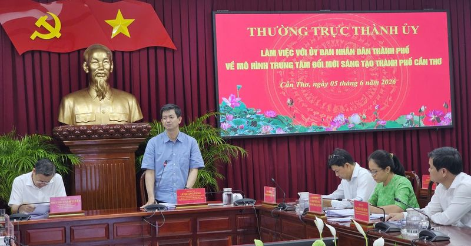
Bàn giao trụ sở Tỉnh ủy Hậu Giang cũ cho Sở Khoa học và Công nghệ Cần Thơ 🔗 MOI
Bí thư Thành ủy Cần Thơ Lê Quang Tùng phát biểu tại buổi làm việc - Ảnh: CHÍ QUỐC Ngày 5-6, Bí thư Thành ủy Cần Thơ Lê Quang Tùng có buổi làm việc với UBND thành phố về mô hình Trung tâm Đổi mới sáng

Google Finance tích hợp AI: Người dùng phổ thông cũng có thể đầu tư như chuyên gia 🔗 MOI
Nhà đầu tư nghiệp dư vẫn có thể hiểu thị trường nhờ công cụ AI mới của Google. Google đang thử nghiệm phiên bản Google Finance tích hợp trí tuệ nhân tạo (AI) tại Israel, đánh dấu bước đi mới trong tha
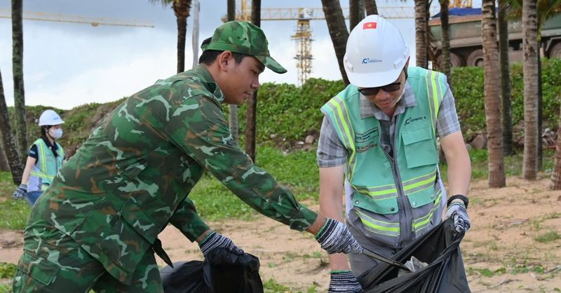
Hơn 100 kỹ sư, công nhân và lực lượng biên phòng thu gom rác tại các dự án đón APEC 2027 ở Phú Quốc 🔗 MOI
Khoảng 100 kỹ sư, công nhân và lực lượng biên phòng An Giang ra quân thu gom rác dọc các bãi biển, dự án đón APEC 2027 ở Phú Quốc - Ảnh: LINH NGUYỄN Thượng tá Lưu Quang Mười - chính trị viên Đồn Biên

Tham vấn chính sách 🔗 MOI
04/06/2026 (Chinhphu.vn) - Bộ Giáo dục và Đào tạo (GDĐT) đang lấy ý kiến của nhân dân đối với dự thảo Thông tư ban hành Quy chế đào tạo trình độ đại học thay... 02/06/2026 (Chinhphu.vn) - Bộ Giáo dục

Tử vi ngày 6 tháng 6: Con giáp nào may mắn hôm nay? 🔗 MOI
Tuổi Tí trong tử vi ngày 6 tháng 6 có thể cảm thấy sốt ruột vì một việc đang tiến triển chậm hơn dự kiến. Tuy nhiên, hôm nay là ngày bạn nên tin tưởng vào những gì mình đã chuẩn bị. Thành quả có thể c
4 nhóm thực phẩm 'vàng' giúp ngừa ung thư đại trực tràng 🔗 MOI
Ung thư đại trực tràng từ lâu đã là một trong những căn bệnh ung thư phổ biến và có tỷ lệ tử vong cao. Sau khi thức ăn được tiêu hóa, các chất cặn bã sẽ đi vào đại tràng và hình thành phân. Nếu bạn bị

Chủ xe hybrid sạc điện bị chỉ trích 'không sạch' vì lười cắm điện, Toyota cho thấy điều ngược lại 🔗 MOI
Hóa ra chủ xe PHEV không lười cắm sạc, mà phụ thuộc vào việc họ sống ở đâu và sở hữu xe dưới hình thức nào - Ảnh: Toyota Trong nhiều năm qua, xe hybrid sạc điện (PHEV) thường bị hoài nghi về hiệu quả

Công cụ AI liên quan Anthropic tự ý xóa sạch dữ liệu của một doanh nghiệp trong 9 giây 🔗 MOI
Hành động phá hoại của công cụ lập trình AI đã khiến khách hàng của Công ty PocketOS rơi vào tình thế khó khăn - Ảnh TED HSU Báo Guardian đưa tin một công cụ lập trình vận hành bằng trí tuệ nhân tạo (
Chân dung doanh nghiệp 🔗 MOI
Không chỉ đánh dấu sự xuất hiện của ông Trịnh Văn Quyết, ĐHĐCĐ của FLC còn gây chú ý với kế hoạch đưa cổ phiếu trở lại giao dịch, tái cấu trúc.
Năng lượng & Khoáng sản 🔗 MOI
Trong số 96 dự án thu hút đầu tư năm 2026, có 21 dự án thuộc lĩnh vực năng lượng, 20 dự án về nhà ở, khu công nghiệp, 15 dự án hạ tầng khu, cụm công nghiệp...
Khối ngoại có tuần đầu tháng 6 bán ròng đột biến gần 7.200 tỷ đồng, cổ phiếu nào là tâm điểm? 🔗 MOI
TIN MỚI Trong tuần đầu tháng 6, thị trường đối mặt với áp lực bán ròng mạnh ngay từ phiên mở cửa, nhanh chóng đánh mất mốc 1.870 điểm. Áp lực bán diễn ra trên diện rộng và lực cầu suy yếu đã đẩy
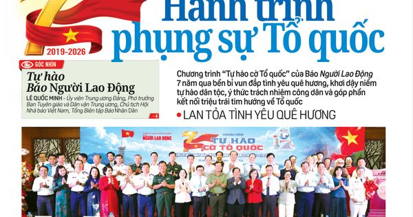
Báo in ngày 6-6: Bảy năm - một hành trình phụng sự Tổ quốc 🔗 MOI
Báo in ngày 6-6 - Bảo đảm đời sống người lao động. Tại Đại hội XIV Công đoàn Việt Nam, đại biểu kiến nghị cải thiện tiền lương, nhà ở; Chính phủ cam kết nâng phúc lợi, tạo điều kiện thuận lợi hơn cho
Jensen Huang thưởng thức thịt nướng ở Hàn Quốc, phát đồ ăn vặt cho người dân 🔗 MOI
CEO của Nvidia, tỷ phú Jensen Huang, đến thăm Seoul ngày 5/6, 7 tháng sau khi từng gây chú ý với buổi đi ăn gà rán bình dân cùng lãnh đạo Samsung Electronics và Hyundai Motor Group. Trong chuyến thăm
Thi hành lệnh bắt tạm giam chủ Công ty Inox Nguyễn Vũ Anh Tuấn 50 tuổi 🔗 MOI
TIN MỚI Phòng Cảnh sát kinh tế Công an tỉnh Đắk Lắk đã ra quyết định khởi tố vụ án, khởi tố bị can, lệnh bắt tạm giam Nguyễn Vũ Anh Tuấn (50 tuổi) về 2 hành vi “Vi phạm quy định về kế toán gây hậu quả
Ký kết Chương trình hợp tác giữa Hội đồng Lý luận Trung ương với Viện Hàn lâm Khoa học xã hội Việt Nam 🔗 MOI
Sự kiện nhằm trao đổi, đánh giá kết quả phối hợp giữa Hội đồng Lý luận Trung ương và Viện Hàn lâm thời gian qua; thống nhất các định hướng, nhiệm vụ và giải pháp nâng cao chất lượng, hiệu quả phối hợp
Ấm áp tình người nơi phên giậu Tổ quốc 🔗 MOI
Hành trình lan tỏa yêu thương Trong bối cảnh ngành y tế đang nỗ lực thu hẹp khoảng cách về chất lượng khám chữa bệnh giữa các tuyến, chương trình hỗ trợ y tế của Câu lạc bộ Nhân đạo Sala phối hợp các
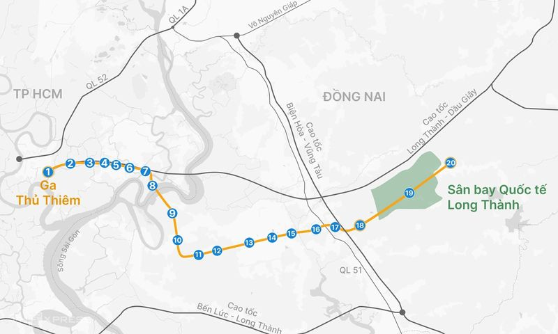
TP HCM đề xuất xây trước 14 ga đường sắt Thủ Thiêm - Long Thành 🔗 MOI
Nội dung được UBND TP HCM nêu trong văn bản gửi Đồng Nai ngày 5/6, liên quan phương án đầu tư tuyến đường sắt Thủ Thiêm - Long Thành. Việc thống nhất phương án giữa hai địa phương nhằm đẩy nhanh thủ t
Con của các huyền thoại sẽ thi đấu tại World Cup 2026 🔗 MOI
Zinedine Zidane và Luca Zidane Khi còn thi đấu, Zinedine Zidane là một trong những tiền vệ hay nhất lịch sử. Ông từng giành Quả Bóng Vàng 1998, giúp tuyển Pháp vô địch World Cup 1998, Euro 2000 và vào
Thêm 2 người bị bắt trong vụ bờ kè đổ sau bão Yagi 🔗 MOI
Đào Minh Khánh (nguyên trưởng phòng quản lý đô thị thành phố Lào Cai trước sáp nhập, hiện là Phó chủ tịch UBND xã Cốc San) bị Cơ quan Cảnh sát điều tra Công an tỉnh Lào Cai bắt tạm giam về tội Thiếu t
Dàn sao triệu view đổ bộ E-Concert tại Ngày tài chính số 2026, fan háo hức săn vé fanzone 🔗 MOI
Dàn nghệ sĩ tham gia trình diễn tại E-Concert vào tối 6-6 E-Concert năm nay không chỉ được nâng cấp hơn về âm thanh ánh sáng mà còn có thiết kế sân khấu hoành tráng với các hiệu ứng mãn nhãn người xem

Coi chừng nhiễm liên cầu lợn vì thói quen ăn tiết canh, thịt tái 🔗 MOI

Làm thế nào để lên thực đơn dinh dưỡng cho gia đình nhiều thế hệ? 🔗 MOI

Khám tiền hôn nhân ở nam và nữ khác nhau như thế nào? 🔗 MOI

Sử dụng thuốc tăng cường sinh lý để kéo dài 'cuộc yêu', có nên không? 🔗 MOI

Chồng không tinh trùng nhưng vợ vẫn sinh được con 'chính chủ', vì sao? 🔗 MOI

Hệ thống Bảo hiểm xã hội Việt Nam: Tăng tốc thực hiện các chỉ tiêu nhiệm vụ năm 2025 🔗 MOI
Theo Bảo hiểm xã hội (BHXH) TP. Hồ Chí Minh, mặc dù năm 2025 gặp một số khó khăn, tuy nhiên tập thể cán bộ viên chức, người lao động BHXH TP. Hồ Chí Minh quyết tâm hoàn thành vượt chỉ tiêu giao, với s

Viêm da tiết bã ở trẻ em khác gì ở người lớn? 🔗 MOI

Xóa xăm có xóa được triệt để hay không? 🔗 MOI

6 dấu hiệu thầm lặng cảnh báo đột quỵ trước 1 tháng 🔗 MOI
Theo The Times of India, 6 dấu hiệu của cơ thể cảnh báo trước 1 tháng khi đột quỵ sắp xảy ra: 1. Chóng mặt bất thường Cảm giác chóng mặt thường được cho là do bỏ bữa, mất nước hoặc đứng dậy quá nhanh.
Danh sách cơ sở khám sức khỏe định kỳ miễn phí dành cho người có tạm trú tại TP.HCM 🔗 MOI
Mở rộng đối tượng thụ hưởng chính sách y tế miễn phí Hàng triệu lao động nhập cư, người thuê trọ và người sinh sống dài hạn tại TP.HCM chưa có hộ khẩu thường trú được khám sức khỏe định kỳ miễn phí nế
🔗 MOI
Tim, gan, phèo, phổi... sướng trợn mắt vì được cậu chủ cung cấp nước ion kiềm, thứ "thần dược" mà các lang băm quảng cáo là trị bách bệnh. Lục phủ ngũ tạng cảm ơn cậu chủ đã cung cấp 'thần dược' - Tra
Video thợ điện máy ‘tá hỏa’ phát hiện 4 con rắn trong dàn lạnh điều hòa nhà dân tại Quảng Ngãi 🔗 MOI
Mùa thi trùng thời điểm mưa bão, Phó thủ tướng yêu cầu tuyệt đối không chủ quan 🔗 MOI
Phó thủ tướng Lê Tiến Châu kiểm tra tiến độ xây dựng Trường phổ thông nội trú tiểu học và trung học cơ sở xã Trà Lĩnh, Cao Bằng - Ảnh: THU SA Chiều 5-6, Phó thủ tướng Lê Tiến Châu cùng đoàn công tác k
Trao quyết định bổ nhiệm 153 lãnh đạo cơ sở giáo dục đại học, giáo dục nghề nghiệp 🔗 MOI
Bộ trưởng Bộ Giáo dục và Đào tạo Hoàng Minh Sơn tại buổi công bố và trao quyết định - Ảnh: BỘ GDĐT Theo Bộ Giáo dục và Đào tạo, trong tổng số 54 cơ sở giáo dục trực thuộc, có 51 cơ sở hoàn thành việc
Phim Việt 🔗 MOI
Cầu thủ U19 Indonesia bị cấm dùng mạng xã hội 🔗 MOI
U19 Indonesia đang siết chặt kỷ luật để hướng tới mục tiêu tiến sâu Giải U19 Đông Nam Á 2026 - Ảnh: AFF Theo tờ Viva (Indonesia), toàn bộ cầu thủ trong đội U19 Indonesia đang "biến mất" trên không gia
Pha tung người ghi bàn của Xuân Son đẹp nhất tháng 5 🔗 MOI
Xuân Son ăn mừng siêu phẩm trong trận gặp Sông Lam Nghệ An - Ảnh: CLB NAM ĐỊNH Ngày 5-6, Công ty VPF công bố các giải thưởng bình chọn trong tháng 5 của LPBank V-League 2025 - 2026. Nguyễn Xuân Son đư
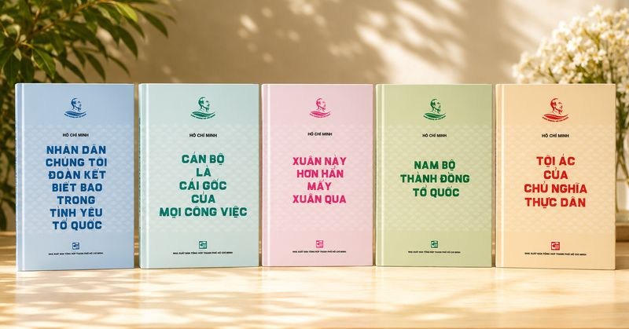
Giới thiệu tủ sách Vinh quang Hồ Chí Minh 🔗 MOI
5 tác phẩm khởi đầu trong tủ sách Vinh quang Hồ Chí Minh - Ảnh: NXB Tổng Hợp TP.HCM Những tác phẩm này được tập hợp từ những bài báo, bài trả lời phỏng vấn, thư, thơ… của Bác Hồ. Những di sản tư tưởng
Lịch trực tiếp U19 Đông Nam Á ngày 6-6: Campuchia đấu Philippines 🔗 MOI
Lịch trực tiếp U19 Đông Nam Á ngày 6-6: Campuchia đấu Philippines - Đồ họa: AN BÌNH Lúc 20h ngày 6-6, U19 Campuchia sẽ chạm trán U19 Philippines ở lượt trận thứ 2 bảng C Giải vô địch U19 Đông Nam Á 20
Trần Quyết Chiến bị loại 'sốc' ở Giải billiards TP.HCM 🔗 MOI
Trần Quyết Chiến bị loại ngay ngày đầu tiên của HBSF Tour 1 - Ảnh: ĐỨC PHONG Là tay cơ số 1 Việt Nam, Trần Quyết Chiến cũng có được thứ hạng cao ở trong nước. Do đó anh được đặc cách để bắt đầu HBSF T
Thời tiết hôm nay 6-6: Nhiều khu vực nắng gay gắt, chiều tối mưa dông 🔗 MOI
Hôm nay 6-6, thời tiết cả nước ngày nắng, chiều tối mưa dông - Ảnh: T.L Trung tâm Dự báo khí tượng thủy văn quốc gia cho biết hôm nay 6-6, thời tiết Bắc Bộ ngày nắng, trung du và đồng bằng ngày nắng n
Rực rỡ đêm nghệ thuật kỷ niệm 115 năm Ngày Bác Hồ ra đi tìm đường cứu nước 🔗 MOI
Khánh Ngọc, Đào Mác thể hiện liên khúc Lòng dân ơn Bác, Dâng Người ngàn hoa chiến công - Ảnh: VĂN TRUNG Lãnh đạo TP.HCM tặng hoa cảm ơn các nghệ sĩ biểu diễn trong chương trình - Ảnh: VĂN TRUNG Tối 5-

Nhật Bản ra mắt 'máy giặt người' trị giá 385.000 USD, làm sạch từ đầu đến chân trong 15 phút 🔗 MOI
Thống đốc Yoshimura Yoshifumi của tỉnh Osaka trải nghiệm máy giặt người Mirai - Ảnh: SISA COMMUNICATION YOUTUBE Theo trang Interesting Engineer ngày 30-11, Công ty Science Inc. của Nhật Bản vừa chính

Hoàn thiện khung khổ pháp lý về tiết kiệm 🔗 MOI
Pháp luật Trong công cuộc phòng, chống lãng phí hiện nay khó có thể tránh khỏi những khó khăn, nguy hiểm, ảnh hưởng tới người đấu tranh chống lãng phí. Do đó, việc bảo vệ người cung cấp thông tin phát

Cải cách tài chính công thúc đẩy tăng trưởng 🔗 MOI
Pháp luật Trong những năm qua, cùng với việc đẩy mạnh tiến trình xây dựng Nhà nước pháp quyền Việt Nam xã hội chủ nghĩa, công tác xây dựng và hoàn thiện hệ thống pháp luật đã đạt được nhiều thành tựu
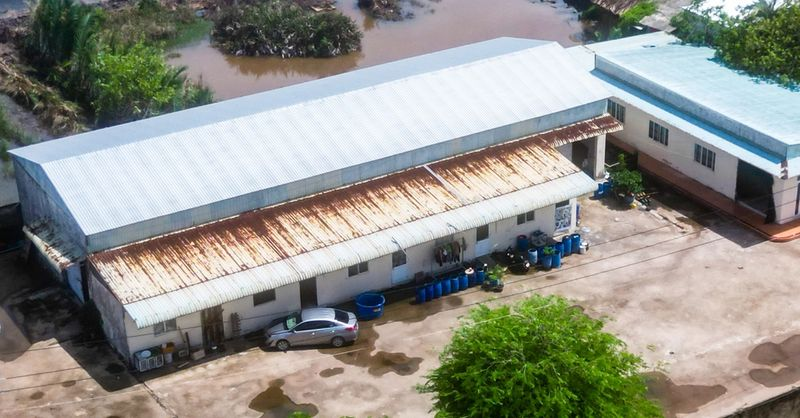
Mua đất được ‘khuyến mãi’ nhà xưởng, chủ đất không chịu nên kiện ra tòa 🔗 MOI
Tài sản của Công ty TNHH thương mại dịch vụ tổng hợp Minh Thành nằm trên đất ông Phát nhiều năm nay không chịu di dời nên ông phải kiện ra tòa - Ảnh: THANH HUYỀN Ngày 5-6, Tòa án nhân dân khu vực 4 mở
Lãnh đạo ủy ban bầu cử Hàn Quốc từ chức vì người dân thiếu phiếu bầu 🔗 MOI
Chủ tịch Ủy ban Bầu cử quốc gia Hàn Quốc Rho Tae Ak cúi đầu xin lỗi ngày 5-6 - Ảnh: AFP Ngày 5-6, lãnh đạo Ủy ban Bầu cử quốc gia (NEC) Hàn Quốc tuyên bố từ chức để chịu trách nhiệm tình trạng thiếu p
Bộ Nội vụ nêu trường hợp người hoạt động không chuyên trách không được hưởng chế độ nghị định 154 🔗 MOI
Ảnh minh họa - Ảnh: QUANG ĐỊNH Bộ Nội vụ mới đây đã có hướng dẫn một số địa phương, trong đó nêu rõ trường hợp người hoạt động không chuyên trách cấp xã sẽ không được hưởng chế độ tinh giản biên chế t
Việt Nam muốn mở rộng hợp tác quốc tế về trí tuệ nhân tạo 🔗 MOI
Ngày 5/6, tại Trụ sở Trung ương Đảng, Tổng Bí thư, Chủ tịch nước Tô Lâm đã tiếp ông Eric Schmidt, nguyên Chủ tịch Tập đoàn Google, cùng đoàn chuyên gia trí tuệ nhân tạo đang thăm và làm việc tại Việt
bảng giá truyền thông 🔗 MOI

Chính phủ với công dân 🔗 MOI
05/06/2026 (Chinhphu.vn) - Sau sáp nhập, xã lên thành phường, Giấy chứng nhận quyền sử dụng đất vẫn là đất ở nông thôn, vậy khi xây nhà có phải xin giấy phép... 05/06/2026 (Chinhphu.vn) - Thí sinh Tuấ

Thông cáo báo chí 🔗 MOI
Thông cáo báo chí 05/06/2026 (Chinhphu.vn) - Văn phòng Chính phủ vừa có Thông cáo báo chí chỉ đạo, điều hành của Chính phủ, Thủ tướng Chính phủ ngày 5/6/2026. 04/06/2026 (Chinhphu.vn) - Văn phòng Chín
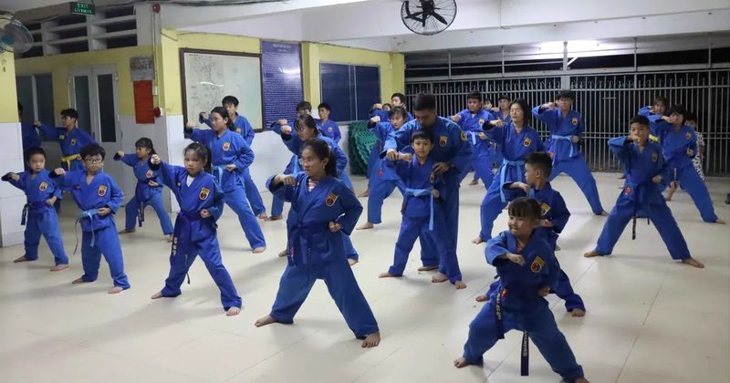
Thắp sáng ngọn lửa võ Việt 🔗 MOI
Các thành viên của CLB Vovinam Phan Đăng Lưu trong một buổi tập luyện (ẢNH: Thư Nguyễn) Điểm sáng của phong trào thể thao cơ sở Nằm trong khuôn viên Trường THCS Phan Đăng Lưu (phường Bình Đông), CLB V
Bí ẩn con tàu 'không thể chìm' trôi dạt không người lái giữa đại dương 🔗 MOI
Tàu "không thể chìm" Joyita. Ảnh: Samoa Observer Dấu vết kỳ lạ trên tàu Theo báo Popular Mechanics, tàu Joyita rời cảng Apia ở Samoa vào ngày 3/10/1955 và dự kiến sẽ tới đích khoảng 2 ngày sau. Tuy nh
Hào quang kỳ ảo bao quanh tượng Phật núi Bà Đen, hiện tượng gì? 🔗 MOI
Hình ảnh hào quang bao quanh tượng Phật trên đỉnh núi Bà Đen được anh Nguyễn Hải Triều (26 tuổi) hiện đang sống và làm việc ở Tây Ninh chia sẻ mới đây đã gây sốt mạng xã hội. Chia sẻ với Thanh Niên ,
Indonesia gây tiếng vang lớn khi thắng đậm đội bóng mạnh của Tây Á 🔗 MOI
Đội tuyển Indonesia có màn trình diễn đầy thuyết phục khi đánh bại Oman 3-0 trong trận giao hữu FIFA Matchday tháng 6/2026 trên sân Gelora Bung Karno. Trước trận, Oman được đánh giá cao hơn nhờ xếp hạ
Hành trình phụng sự Tổ quốc 🔗 MOI
Ngày 5-6, Báo Người Lao Động long trọng tổ chức Lễ kỷ niệm 7 năm chương trình "Tự hào cờ Tổ quốc" và 101 năm ngày Báo chí Cách mạng Việt Nam (21.6.1925 - 21.6.2026). Hơn 2,1 triệu lá cờ đã trao và ký
Người đàn ông suýt mất mạng vì 1 thói quen ăn sáng kéo dài nhiều năm 🔗 MOI
Thói quen ăn giàu nước béo Cơn đau tức ngực xuất hiện vào một buổi chiều hè đầu tháng 5 tưởng chừng chỉ là biểu hiện mệt mỏi sau giờ làm việc của ông N.M.T (45 tuổi, Hà Nội). Tuy nhiên, thực chất đây
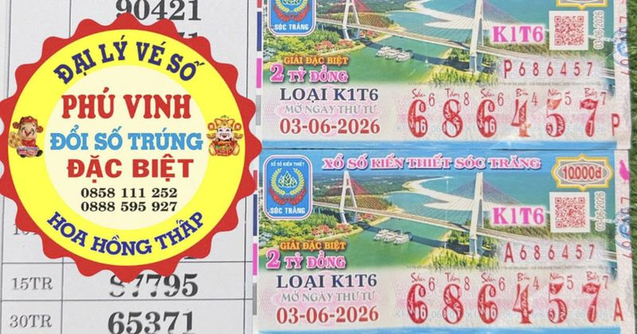
Trúng số độc đắc 4 tỉ xổ số miền Nam, khách bất ngờ trúng thêm giải nữa 🔗 MOI
Đó là chia sẻ của anh Phú Vinh, chủ đại lý vé số Phú Vinh ở phường Trà Vinh (Vĩnh Long) sau khi đã đổi thưởng 2 tờ vé số trúng 2 giải xổ số miền Nam trị giá hơn 4 tỉ đồng. Vé trúng 2 giải xổ số miền N
Lời kêu gọi của Chủ tịch Hồ Chí Minh mãi vẹn nguyên giá trị 🔗 MOI
Đại biểu dự hội thảo khoa học do Bộ Quốc phòng phối hợp với Thành ủy TPHCM tổ chức (ẢNH: VIỆT DŨNG) Chủ trì hội thảo có các đồng chí: Thượng tướng Nguyễn Văn Gấu, Ủy viên Trung ương Đảng, Thứ trưởng B
Bác sĩ chỉ ra thời khóa biểu sống khỏe cho người cao tuổi 🔗 MOI
6 giờ sáng, các công viên nhộn nhịp những bước chân đi bộ , nhóm tập dưỡng sinh, khiêu vũ của người cao tuổi . Nhiều người trong số họ đã nghỉ hưu nhưng vẫn duy trì lối sống năng động để bảo vệ sức kh
Chiêu đặc biệt giúp U19 Việt Nam đánh bại Indonesia 🔗 MOI
Cục diện tại bảng A giải U19 Đông Nam Á 2026 đang có lợi cho U19 Việt Nam. Với việc hơn U19 Indonesia về hiệu số phụ, đoàn quân của HLV Yutaka Ikeuchi chỉ cần một kết quả hòa là giành vé vào bán kết v
Dự báo thời tiết 6/6/2026: Nắng nóng quay lại miền Bắc, Hà Nội tăng lên 36 độ 🔗 MOI
Theo Trung tâm Dự báo khí tượng thủy văn quốc gia, ngày 6/6, khu vực trung du và đồng bằng Bắc Bộ có nắng nóng, có nơi nắng nóng gay gắt với nhiệt độ cao nhất phổ biến 35-36 độ, có nơi trên 37 độ; độ
MC Lý Quí Chánh: Pickleball sẽ còn phát triển mạnh 🔗 MOI
Tại giải đấu sắp tới, MC - bình luận viên Lý Quí Chánh (còn gọi là Lý Chánh - con út của cố nhà báo Chánh Trinh) sẽ kết hợp cùng ca sĩ Châu Gia Kiệt tranh tài ở nội dung đôi nam nghệ sĩ. Người đam mê
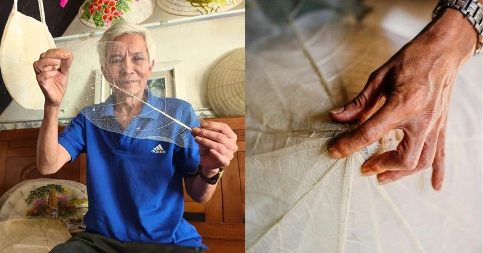
Nghệ nhân gần 70 tuổi và hành trình biến lá rừng thành tác phẩm nghệ thuật 🔗 MOI
Giữa lòng cố đô Huế, nghệ nhân Võ Ngọc Hùng - người được nhiều du khách ưu ái gọi bằng cái tên “Vua lá cây” đang biến những chiếc lá tưởng chừng vô tri của núi rừng thành các tác phẩm nghệ thuật độc đ
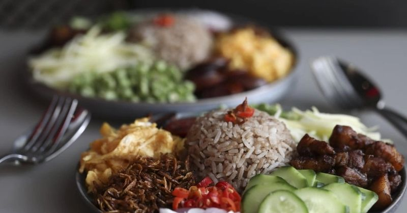
Quốc gia nào có món ăn bị xếp vào nhóm dở nhất Đông Nam Á? 🔗 MOI
1. Quốc gia nào có món ăn bị xếp vào nhóm dở nhất Đông Nam Á? Việt Nam 0% Malaysia 0% Thái Lan 0% Indonesia 0% Chính xác Theo bảng xếp hạng "10 món ăn đường phố dở nhất Đông Nam Á" do TasteAtlas công
Thời tiết thi tốt nghiệp THPT 2026: Cả nước có nắng, miền Bắc mưa giông chiều tối 🔗 MOI
Từ ngày 10-12/6/2026, hàng triệu thí sinh trên cả nước sẽ bước vào kỳ thi tốt nghiệp THPT năm 2026. Theo dự báo của Cục Khí tượng Thủy văn, thời tiết trên cả nước nhìn chung khá thuận lợi cho công tác
6 việc nên làm mỗi sáng hỗ trợ ổn định huyết áp 🔗 MOI
Huyết áp thường thay đổi theo nhịp sinh học và có xu hướng tăng vào buổi sáng khi cơ thể chuyển từ trạng thái nghỉ ngơi sang hoạt động. Các chuyên gia cho rằng một số thói quen đơn giản sau khi thức d
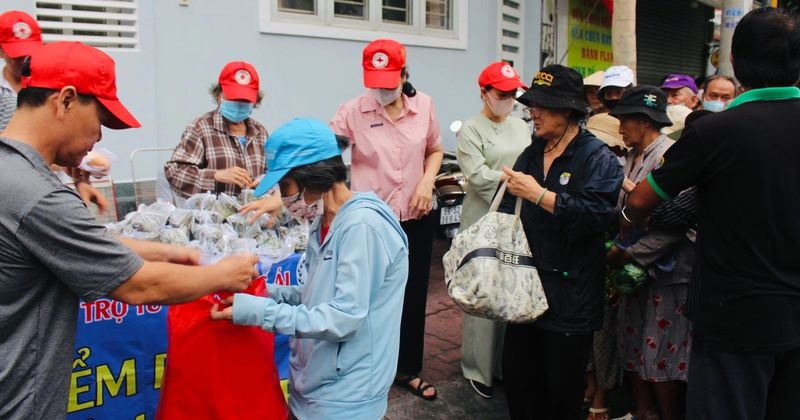
Bữa sáng 0 đồng ‘kỳ lạ’ ở TP.HCM: Từ 4 giờ đã có người chờ 🔗 MOI
Bữa sáng 0 đồng ấm lòng người Khoảng 6 giờ sáng thứ bảy hằng tuần, điểm trao bữa sáng 0 đồng tại số 22 Bùi Đình Túy (phường Bình Thạnh, TP.HCM) trở nên rộn ràng hơn thường ngày. Chương trình do Ban Bả
Tưởng “nháy mắt vô hại”, ngờ đâu là cuộc xung đột giữa mạch máu và dây thần kinh 🔗 MOI
Suốt 3 năm qua, từ những cái nháy mắt tưởng chừng vô hại, cơn co giật bắt đầu lan dần từ vùng miệng đến toàn bộ nửa mặt bên phải của anh S.Y.C, 53 tuổi (Campuchia). Tần suất xuất hiện ngày càng dày đặ
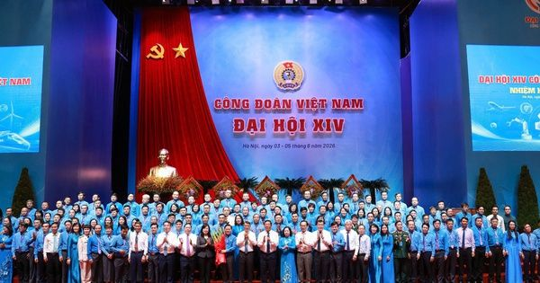
Bảo đảm đời sống người lao động 🔗 MOI
Sáng 5-6, tại TP Hà Nội, trong khuôn khổ phiên bế mạc Đại hội XIV Công đoàn Việt Nam, Thủ tướng Lê Minh Hưng đã trao đổi, thảo luận với các đại biểu dự đại hội với chủ đề "Công đoàn Việt Nam đồng hành
Chủ tịch Trịnh Văn Tuấn bị bắt, PC1 đón cổ đông lớn mới 🔗 MOI
TIN MỚI CTCP Đầu Tư Hạ Tầng Kỹ Thuật Thành Phố Hồ Chí Minh (mã CK: CII) vừa báo cáo giao dịch về việc trở thành cổ đông lớn của CTCP Tập đoàn PC1 (mã CK: PC1). Cụ thể, Công Ty TNHH Thương Mại Đầu Tư C
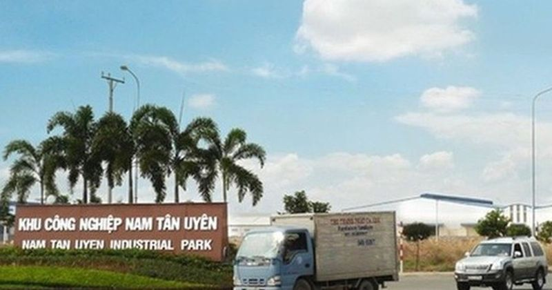
Nam Tân Uyên lên kế hoạch kinh doanh ‘đi lùi’ trong năm 2026 🔗 MOI
TIN MỚI Công ty Cổ phần Khu công nghiệp Nam Tân Uyên (MCK: NTC, sàn HoSE) vừa công bố tài liệu cho cuộc họp Đại hội đồng cổ đông (ĐHĐCĐ) dự kiến diễn ra ngày 26/6/2026 tới đây. Theo đó, Nam Tân Uyên s

Google ra mắt Gemma 4, AI chạy offline trên thiết bị cá nhân 🔗 MOI
Gemma 4 chạy trực tiếp trên thiết bị cá nhân - Ảnh: THOMAS FULLER Trong bối cảnh trí tuệ nhân tạo vẫn phụ thuộc vào hạ tầng đám mây, việc một mô hình có thể hoạt động trực tiếp trên thiết bị cá nhân đ

Google 'lột xác' với kính AI và Gemini 3.5 🔗 MOI
CEO Google Sundar Pichai phát biểu về phiên bản Gemini Spark tại sự kiện Google I/O ở bang California, ngày 19-5 - Ảnh: AP Tại hội nghị Google I/O 2026 diễn ra ngày 19-5 ở bang California (Mỹ), Google
cổ phiếu AAN 🔗 MOI
Chỉ sau một tuần giao dịch trên HoSE, cổ phiếu AAN đã tăng hơn 56%. Doanh nghiệp cho biết diễn biến này đến từ cung cầu thị trường và không có tác động chủ quan từ công ty..
Nhan sắc thời trẻ của Hà Kiều Anh 🔗 MOI
Chị đón tuổi 50 bên gia đình và bạn bè vào cuối tháng 5 (trái). Dịp này người đẹp chia sẻ loạt ảnh thời trẻ của mình (phải). Hà Kiều Anh sinh ra ở Hà Nội, đăng quang Hoa hậu Việt Nam 1992 khi mới 16 t
Tuyển Na Uy hóa thân chiến binh Viking trước World Cup 2026 🔗 MOI
Hơn 1.000 năm trước, người Viking được cho đã vượt Đại Tây Dương và đặt chân tới Bắc Mỹ trước cả Christopher Columbus hàng thế kỷ. Và giờ đây, hình ảnh những chiến binh Bắc Âu dường như đã trở lại. Tr
Án mạng bế tắc 38 năm được phá nhờ con mắt tinh tường của thám tử 🔗 MOI
Ngày 9/3/1979, Janie Landers, 18 tuổi, lặng lẽ rời khỏi Trung tâm đào tạo Fairview ở thành phố Salem, bang Oregon. Fairview là cơ sở nội trú dành cho người khuyết tật phát triển và gặp các vấn đề sức
Máy bay chở khách có tầm bay xa nhất thế giới 🔗 MOI
Theo Interesting Engineering , Airbus hoàn thành chuyến bay đầu tiên của máy bay A350-1000ULR hôm 2/6 tại Toulouse, Pháp. Trong thử nghiệm, phương tiện đã bay 3 giờ 43 phút và đạt độ cao gần 12.500 m.
Cầu thủ gốc Việt vào danh sách đáng xem nhất World Cup 2026 🔗 MOI
Trong danh sách 26 cầu thủ Algeria dự World Cup 2026 , Ibrahim Maza là cái tên nhận được nhiều sự quan tâm từ người hâm mộ VN. Tiền vệ sinh năm 2005 có cha là người Algeria và mẹ mang dòng máu VN, sin
Nghệ tươi hay bột nghệ: Loại nào giúp cơ thể hấp thu curcumin tốt hơn? 🔗 MOI
Curcumin là hoạt chất chính trong nghệ, nổi tiếng với khả năng chống viêm và chống oxy hóa. Tuy nhiên, cơ thể chỉ hấp thu được một lượng nhỏ hoạt chất này. Vì vậy, việc lựa chọn nghệ tươi hay bột nghệ
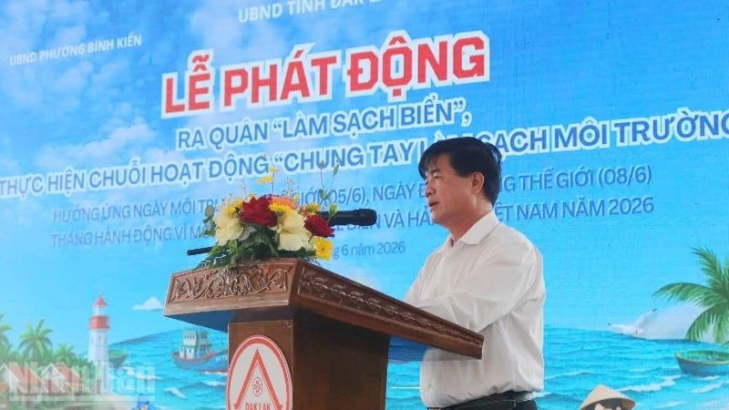
Đắk Lắk phát động chuỗi hoạt động làm sạch môi trường, bảo vệ biển, đảo năm 2026 🔗 MOI
Ngày 5/6, tại khu vực bãi biển Long Thủy, phường Bình Kiến, Ủy ban nhân dân tỉnh Đắk Lắk tổ chức lễ phát động ra quân làm sạch biển, thực hiện chuỗi hoạt động “Chung tay làm sạch môi trường”, hưởng ứn
Chương trình nghệ thuật “Hồ Chí Minh - Nguồn sáng dẫn đường” 🔗 MOI
Chương trình nghệ thuật gồm 3 chương: Theo dấu chân xưa, Lời Bác trong tim ta, Tình Bác sáng đời ta. Thông qua ngôn ngữ nghệ thuật , chương trình tái hiện chân dung Chủ tịch Hồ Chí Minh, Người không đ
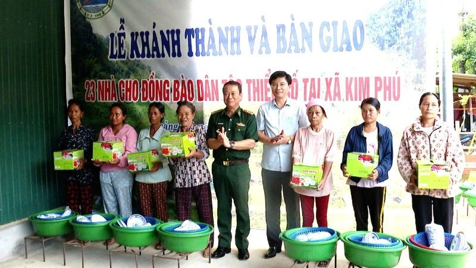
Quảng Trị khánh thành 23 ngôi nhà cho đồng bào Chứt ở xã Kim Phú 🔗 MOI
Ủy viên Ban Thường vụ, Trưởng ban Tuyên giáo và Dân vận Tỉnh ủy Quảng Trị Trương An Ninh đến dự. Thực hiện chủ trương của Đảng, Nhà nước về chăm lo đời sống đồng bào dân tộc thiểu số , hộ có hoàn cảnh
Chương trình nghệ thuật “Biển Việt Nam - Hành trình không gian xanh” 🔗 MOI
Cùng dự, có các đồng chí Ủy viên Trung ương Đảng: Hồ Quốc Dũng, Phó Thủ tướng Chính phủ; Trịnh Việt Hùng, Bộ trưởng Nông nghiệp và Môi trường; Hà Thị Nga, Phó Chủ tịch, Tổng Thư ký Ủy ban Trung ương M
Chia sẻ của người đàn ông trúng Vietlott hơn 83,5 tỉ, không đeo mặt nạ khi nhận thưởng 🔗 MOI
Gửi bình luận Bình luận ( 0 ) Hiện chưa có bình luận nào, hãy là người đầu tiên bình luận Xem thêm bình luận

CMC OpenAI phát triển mô hình AI pháp lý tiếng Việt 🔗 MOI
Bộ chuẩn đánh giá VLegal - Bench của nhóm nghiên cứu C-OpenAI đăng ký trên cổng arXiv của Trường đại học Cornell - Mỹ phiên bản mới nhất cập nhật ngày 25-12-2025. CMC OpenAI , công t

Vì sao càng dùng điện thoại, bạn càng khó ngủ? 🔗 MOI
Ánh sáng xanh từ điện thoại khiến não bộ “tỉnh táo giả” vào ban đêm Mỗi tối, hàng triệu người cầm điện thoại lên giường với suy nghĩ chỉ lướt vài phút trước khi ngủ. Nhưng thực tế, chính ánh sáng phát
Đọc nhanh KTSG Bản in 🔗 MOI
Trang mà bạn đang truy cập không tồn tại! Để đọc tiếp, bạn có thể click vào các trang bên dưới:!
Nghiên cứu thị trường 🔗 MOI
9 tháng đầu năm 2025, CPI tăng 3,27%, lạm phát cơ bản tăng 3,19%, Cục Thống kê đánh giá lạm phát 'đang trong tầm kiểm soát'.
Câu chuyện thương trường 🔗 MOI
Các dự án tập trung vào các lĩnh vực công nghiệp, hạ tầng, xử lý rác thải, thiết bị y tế, vật tư sản xuất nông nghiệp, may mặc, thương mại, dịch vụ tổng hợp, chế biến nông sản.

Trung Quốc chế tạo máy phát hiện ung thư cầm tay: Chỉ cần 1 giọt máu, chính xác tới 94,9% 🔗 MOI
Thiết bị tầm soát cầm tay có thể phát hiện sớm dấu hiệu ung thư có độ chính xác đến 95% chỉ bằng một giọt máu được phát triển bởi các nhà khoa học Trung Quốc - Ảnh: Chụp màn hình Theo báo SCMP ngày 25

Hoàng Hên, Duy Mạnh khuấy động ngày khai màn Giải bóng rổ chuyên nghiệp Việt Nam 2026 🔗 MOI
Đỗ Hoàng Hên được fan xin giao lưu - Ảnh: BTC Tối 21-5, tại Nhà thi đấu Xuân Đỉnh (Hà Nội) đã diễn ra lễ khai mạc VBA 2026 . Mùa giải thứ 11 của Giải bóng rổ chuyên nghiệp Việt Nam khởi đầu hấp dẫn bằ

Cách loại bỏ phần trả lời AI khỏi kết quả tìm kiếm Google 🔗 MOI
AI Overviews dược đặt ưu tiên trước các kết quả tìm kiếm truyền thống Hiện nay kết quả tìm kiếm trên Google thường bắt đầu bằng một đoạn tóm tắt do AI tạo ra trước khi người dùng nhìn thấy danh sách w

Code do AI viết nhanh hơn, nhưng lỗi nhiều gấp 1,7 lần con người 🔗 MOI
AI chuyển hóa từ ý tưởng sang sourcecode nhanh nhưng chưa tinh Nghiên cứu mới nhất từ CodeRabbit (một công cụ đánh giá mã nguồn phổ biến) chỉ ra rằng mã nguồn do AI tạo ra có tỉ lệ lỗi cao gấp 1,7 lần

ChatGPT cũng 'khoe' Wrapped, nhìn lại một năm bạn dùng AI 🔗 MOI
Cùng ChatGPT nhìn lại 1 năm đồng hành với tính năng Your Year with ChatGPT - Ảnh: OpenAI OpenAI vừa giới thiệu tính năng tổng kết năm cho người dùng ChatGPT , mang tên chính thức là 'Your Year
'Phòng chống kiệt sức tại nơi làm việc cần được luật hóa' 🔗 MOI
Tại Đại hội Công đoàn Việt Nam lần thứ 14, Tổng liên đoàn Lao động Việt Nam kiến nghị cấp có thẩm quyền sửa đổi toàn diện Bộ luật Lao động năm 2019. Một trong các nội dung cần sửa là quy định trách nh
Bụi mù mịt trên đại công trường Thủ đô 🔗 MOI
Việc thi công các công trình tại Hà Nội đang được đẩy nhanh tiến độ nhằm cải thiện diện mạo đô thị, giảm ùn tắc và ngập úng. Tuy nhiên, việc thiếu các biện pháp kiểm soát bụi trong quá trình phá dỡ, đ
Những ấn phẩm thiếu nhi chào hè 🔗 MOI
Dịp chào hè năm nay, Nhà xuất bản Kim Đồng giới thiệu ba ấn phẩm thuộc Tủ sách Tuổi thần tiên của đơn vị. Sách Bí mật của lá đỏ của cây bút Kagome027 (tên thật là Nguyễn Ngọc Hoàng Lan) khắc họa một t
Yamal hay nhất La Liga 2025-2026 🔗 MOI
Ban tổ chức La Liga công bố giải thưởng hôm 5/6. Yamal vượt qua 4 ứng viên còn lại gồm Kylian Mbappe, Vedat Muriqi, Pablo Fornals và Nicolas Pepe để giành danh hiệu cá nhân cao quý nhất mùa giải. Kết
World Cup 2026 đổi mới nghi thức trước trận 🔗 MOI
Được xây dựng dựa trên trải nghiệm của khán giả và các đội tuyển, cùng phần âm nhạc từ album chính thức của World Cup 2026 , nghi thức mới áp dụng thiết kế tương tác 360 độ, biến toàn bộ sân vận động
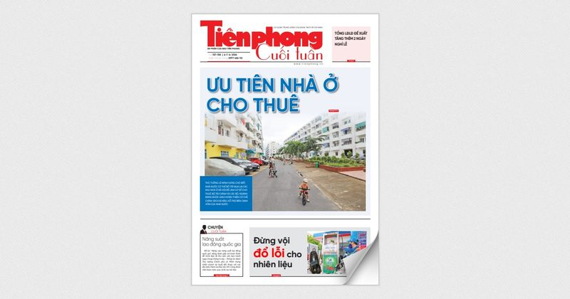
Báo Tiền Phong số 157-158 🔗 MOI
7 năm "Tự hào cờ Tổ quốc": Một hành trình, triệu niềm tin 🔗 MOI
Những thực phẩm làm cơn căng thẳng trở nên tồi tệ hơn 🔗 MOI
Một số thực phẩm phổ biến có thể khiến đường huyết biến động mạnh, gia tăng viêm nhiễm và làm cơ thể khó duy trì trạng thái cân bằng hơn - Ảnh: AI Cortisol được sản xuất bởi tuyến thượng thận và tham

Siri có thể tích hợp ChatGPT, Gemini trên iOS 27 🔗 MOI
Người dùng có thể sớm được tự do lựa chọn "bộ não" AI cho Siri ngay trên giao diện iOS 27 Apple đang thử nghiệm một thay đổi đáng chú ý với Siri, khi cân nhắc cho phép tích hợp các mô hình AI bên ngoà

Những điểm check-in ở Nha Trang 'nổi rần rần trên mạng' 🔗 MOI
Bờ kè xóm Chụt đặc biệt thu hút giới trẻ đến check-in trong thời gian gần đây - Ảnh: TRẦN HOÀI Bên cạnh những điểm đến, các khu du lịch vốn đã nổi tiếng, nhiều điểm check-in miễn phí hoặc với chi phí

Lạc vào làng cổ Lộc Yên, nơi có cổng ngõ, bờ rào bằng đá trăm năm tuổi xếp chồng độc đáo 🔗 MOI
Lối vào của một ngôi nhà cổ ở Lộc Yên, ngõ đá, bờ rào cổ kính - Ảnh: LÊ TRUNG Làng cổ Lộc Yên, xã Thạnh Bình, TP Đà Nẵng (trước đây thuộc xã Tiên Cảnh, huyện Tiên Phước , Quảng Nam) được công nhận là

Nghiên cứu mới hé lộ cách giúp trẻ chịu ăn rau 🔗 MOI
Không ít phụ huynh "đau đầu" vì con không chịu ăn rau - Ảnh: NATURE'S PATH Nghiên cứu, do các nhà khoa học tại Đại học Durham và Đại học Aston (Anh) thực hiện, phát hiện những trẻ từng tiếp xúc với mù

Indonesia siết quản lý Roblox, buộc xác minh độ tuổi bằng khuôn mặt 🔗 MOI
Trẻ dưới 16 tuổi chơi Roblox ở Indonesia phải quét khuôn mặt xác minh độ tuổi - Ảnh: REUTERS Bà Nicky Jackson Colaco - Phó chủ tịch kiêm Giám đốc chính sách công toàn cầu của Roblox - cho biết công ty

Tuyên án tù chung thân đối với Đào Minh Quân về tội khủng bố, hoạt động nhằm lật đổ chính quyền 🔗 MOI
Tuyên án tù chung thân đối với Đào Minh Quân về tội khủng bố, hoạt động nhằm lật đổ chính quyền nhân dân - Ảnh: TTXVN Bị cáo Đào Minh Quân - đối tượng cầm đầu tổ chức "Chính phủ quốc gia Việt Nam lâm

Xã miền núi thu 46 tỉ từ YouTube, TikTok, Facebook 🔗 MOI
Phiên chợ số bán sản phẩm địa phương ở Lâm Bình - Ảnh: CÔNG ĐẠI Ngày 2-5, lãnh đạo UBND xã Lâm Bình (tỉnh Tuyên Quang) cho biết UBND xã vừa công bố đề án xây dựng thí điểm "Làng sáng tạo nội dung số g

Người trẻ rối loạn cương dương tăng 🔗 MOI
Bác sĩ Bệnh viện Nhân dân Gia Định (TP.HCM) tư vấn và thăm khám sức khỏe cho bệnh nhân tại phòng khám nam khoa - Ảnh: MINH TOÀN Đáng lo hơn, không ít thanh niên trẻ âm thầm chịu đựng, tự tìm thông tin

50 triệu đồng cho giáo viên IELTS sáng tạo nội dung số 🔗 MOI
Hội đồng Anh lần đầu phát động cuộc thi tìm giáo viên IELTS sáng tạo nội dung số - Ảnh: BC Hội đồng Anh Việt Nam vừa phát động IELTS EduCreators 2026, giải thưởng dành cho giáo viên và người giảng dạy

Hơn 1.000 người ở TP.HCM tham dự chương trình phòng, chống đuối nước 🔗 MOI
Phó giám đốc Sở Văn hóa - Thể thao TP.HCM Trần Thị Thu Hiền (thứ tư từ phải sang) tại lễ phát động - Ảnh: PHÚC LÊ Sáng 23-5, chương trình phát động toàn dân tập luyện môn bơi, phòng, chốn

HLV Philippe Troussier: U22 Việt Nam có sức ép 🔗 MOI
Tiền vệ Công Đến (giữa) trên sân tập tại Campuchia chiều 26-4 - Ảnh: N.K. "Chúng tôi có sức ép về mục tiêu tại SEA Games . Chúng tôi có sức ép phải chơi thứ bóng đá tốt nhất của mình.

Xem video siêu phẩm từ giữa sân của Chanathip vào lưới Công An Hà Nội 🔗 MOI
Video Chanathip lập siêu phẩm vào lưới Công An Hà Nội - Nguồn: FPT Play Ở trận đấu này, CLB Công An Hà Nội đã sớm có bàn thắng dẫn trước ở phút 20 nhờ công của Alan. Sau đó, đại diện bóng đá Việt Nam

Mùng 3 Tết, Lễ hội xuân Cần Giờ tại Vinhomes Green Paradise đông vui vượt mong đợi 🔗 MOI
Gian hàng ông đồ thu hút nhiều người đến xin chữ đầu năm - Ảnh: VĨNH SƯƠNG Chị Hằng, một cư dân sống ở Cần Giờ (TP.HCM) nhiều năm, chia sẻ chị không nghĩ Lễ hội xuân Cần Giờ lại đông vui đến vậy. “Lễ

Ngoại tình bị phạt tiền: có làm người ta chung thủy hơn? 🔗 MOI
Minh họa: ĐẶNG HỒNG QUÂN H. - người em thân thiết - nói với tôi rằng: "Có những buổi tối mình không sợ cô đơn, mà sợ con mình hỏi: ba đâu?". Đó không phải chỉ là một câu hỏi, mà là một vết xước lặp đi